TongHopTin
Tong hop tin tuc - 2026-06-08
Giao thông xanh tái định hình bản đồ kinh tế 🔗 MOI
Theo dữ liệu phân tích chuyên sâu từ Cơ quan Năng lượng quốc tế (IEA) trong báo cáo "Global EV Outlook" và các khảo sát xu hướng tiêu dùng từ Trung tâm Nghiên cứu Pew (Mỹ), thế giới vừa vượt qua một c
Nga đánh giá cao nỗ lực của Tổng thống Donald Trump trong vấn đề Ukraine 🔗 MOI
Facebook Twitter Lưu bài viết Bản in Copy link Phóng viên TTXVN tại Moskva dẫn lời người phát ngôn Điện Kremlin Dmitry Peskov ngày 7/6 cho biết Nga đánh giá cao sự chân thành của Tổng thống Mỹ Donald
Làn sóng AI đe dọa thế hệ startup tiền ChatGPT 🔗 MOI
5 năm trước, hưởng lợi từ đại dịch Covid-19, công ty công nghệ giáo dục Chegg (Mỹ) phát triển mạnh mẽ với giá trị thị trường đạt hơn 14 tỷ USD. Học trực tuyến bùng nổ, hàng triệu sinh viên dựa vào nền
Cử tri Mỹ thất vọng về kinh tế, Đảng Cộng hòa vẫn còn hy vọng ở bầu cử giữa kỳ 🔗 MOI
Tổng thống Mỹ Donald Trump chỉ trích cuộc bỏ phiếu của Hạ viện nhằm hạn chế quyền lực chiến tranh của ông, liên quan đến xung đột ở Iran, hôm 4-6 - Ảnh: AFP Báo Financial Times ngày 7-6 công bố kết qu
Việt Nam và Lào đẩy mạnh hợp tác kinh tế, từ hữu nghị sang hiệu quả 🔗 MOI
Thủ tướng Lê Minh Hưng và Thủ tướng Lào Sonexay Siphandone tại hội đàm ngày 7-6 - Ảnh: NGUYỄN KHÁNH Chiều 7-6, sau lễ đón chính thức, Thủ tướng Lê Minh Hưng và Thủ tướng Lào Sonexay Siphandone đã hội
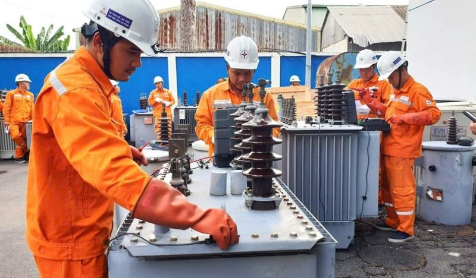
EVN hết lỗ lũy kế, có hơn 150.000 tỷ đồng gửi ngân hàng 🔗 MOI
Nhờ doanh thu tăng và biên lợi nhuận gộp cải thiện mạnh, EVN lãi gần 52.000 tỷ đồng trong năm ngoái, qua đó xoá hết lỗ luỹ kế. Ảnh minh họa. Nguồn: EVN Theo báo cáo tài chính hợp nhất năm 2025 đã kiểm
Tổng thống Mỹ Donald Trump gửi lời tới Iran 🔗 MOI
Tổng thống Mỹ Donald Trump. (Ảnh: Reuters) Lực lượng Mỹ và Israel khai màn các cuộc tấn công vào Iran ngày 28/2. Từ khi bắt đầu lệnh ngừng bắn đầu tháng 4 đến nay, chính quyền Tổng thống Mỹ Donald Tru
Xăng E10 ổn định sau 1 tuần triển khai đại trà 🔗 MOI
Chưa ghi nhận phản ánh về sự cố Thông tin về việc triển khai bán đại trà xăng sinh học E10 trên toàn quốc sau 1 tuần, bà Nguyễn Thúy Hiền, Phó cục trưởng Cục Quản lý và phát triển thị trường trong nướ
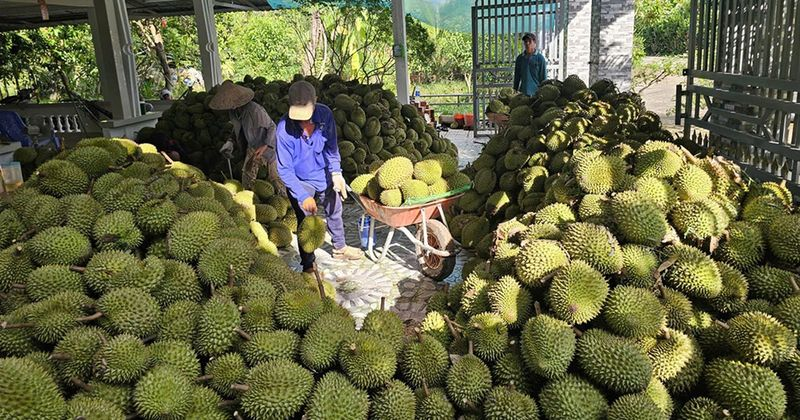
Xuất khẩu nông sản 'lãi ròng' lớn 🔗 MOI
Chinh phục cột mốc 20,7 tỉ USD Dù mang về lãi ròng 7,5 tỉ USD nhưng so với cùng kỳ năm trước, tốc độ xuất siêu nông sản cũng giảm đến 9,3%. Nguyên nhân là sức mua của các thị trường nhập khẩu giảm do
Mỹ tính dùng tài sản Iran để bồi thường cho đồng minh 🔗 MOI
Trước đó, Mỹ ngăn chặn 4 UAV khác và oanh tạc các vị trí radar giám sát bờ biển của Tehran. Iran đáp trả bằng cách phóng một loạt tên lửa sang hai đồng minh của Mỹ là Bahrain và Kuwait trong ngày 6.6,
EVN thông tin rõ về khoản lợi nhuận hợp nhất toàn tập đoàn và tiền gửi ngân hàng 🔗 MOI
EVN thông tin về báo cáo tài chính năm 2025 - Ảnh: NAM TRẦN Theo EVN, việc lập báo cáo tài chính riêng của công ty mẹ - EVN và báo cáo tài chính hợp nhất năm 2025 đã được EVN thực hiện tuân thủ theo c

Phát huy vai trò chủ đạo của kinh tế nhà nước trong kỷ nguyên mới 🔗 MOI
Kinh tế Thay vì dựa trên quy mô sở hữu, bài viết phân tích vai trò của kinh tế nhà nước trong nền kinh tế Việt Nam theo cách tiếp cận chức năng: ổn định kinh tế vĩ mô, định hướng phát triển và thiết l
Pháp tìm cách níu chân ông Trump tại hội nghị G7 🔗 MOI
"Tôi sẽ tới dự hội nghị G7 tại Pháp ngay sau một trong những đêm giải trí hấp dẫn nhất trong lịch sử Mỹ, đó là các trận tranh đai vô địch thế giới UFC trên bãi cỏ phía Nam Nhà Trắng", Tổng thống Donal
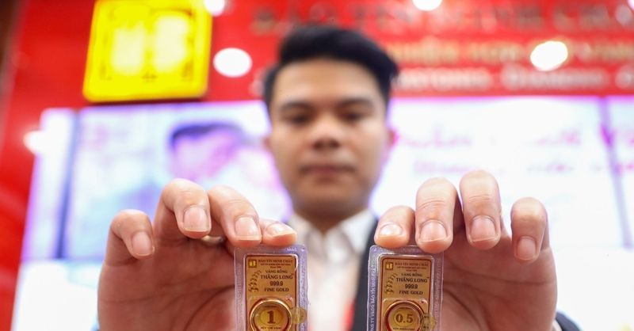
Giá vàng hôm nay 8/6/2026: Xu hướng giảm sâu, trong nước áp lực hạ tiếp 🔗 MOI
Giá vàng thế giới hôm nay 8/6/2026 Giá vàng thế giới trải qua một tuần biến động mạnh. Đầu tuần, vàng giao dịch quanh mức 4.539 USD/ounce và có thời điểm tăng lên mức cao nhất tuần 4.545 USD/ounce trư
Trung Đông sáng 8-6: Iran lần đầu phóng tên lửa vào Israel trong lúc ngừng bắn, giá dầu tăng 3% 🔗 MOI
Khói bốc lên từ hiện trường cuộc không kích của Israel vào một khu dân cư ở thành phố ven biển Tyre, miền nam Lebanon ngày 7-6 - Ảnh: AFP Iran lần đầu phóng tên lửa tấn công Israel giữa lệnh ngừng bắn

Đổi mới mô hình tăng trưởng gắn với tái cơ cấu nền kinh tế trong giai đoạn mới 🔗 MOI
Pháp luật Triển khai Nghị quyết số 07-NQ/TW ngày 18/11/2016 của Bộ Chính trị về chủ trương, giải pháp cơ cấu lại ngân sách nhà nước, quản lý nợ công, việc cơ cấu lại ngân sách nhà nước, quản lý nợ côn

Tiếp nhận phản ánh kiến nghị của doanh nghiệp 🔗 MOI
HỌ VÀ TÊN * EMAIL * SỐ ĐIỆN THOẠI * ĐỊA CHỈ * TIÊU ĐỀ * FILES ĐÍNH KÈM NỘI DUNG * RadEditor - HTML WYSIWYG Editor. MS Word-like content editing experience thanks to a rich set of formatting tools, dro
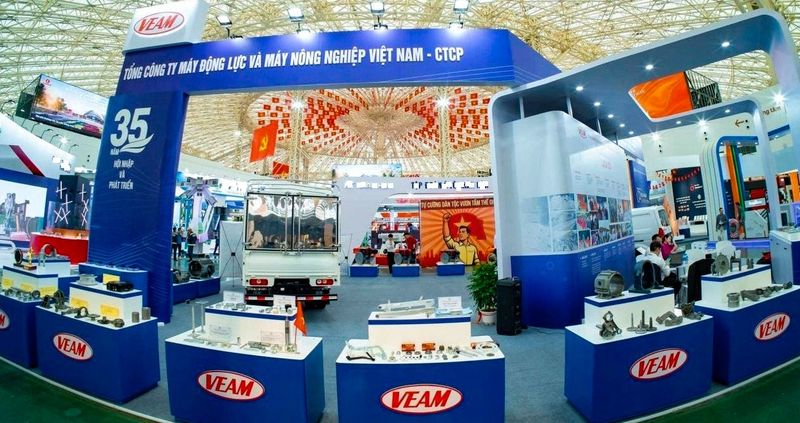
Sai sót thuế từ 15 năm trước, VEAM bị áp dụng khắc phục hậu quả 🔗 MOI
Tổng công ty Máy động lực và Máy nông nghiệp Việt Nam (VEAM - mã: VEA) vừa công bố quyết định về việc áp dụng các biện pháp khắc phục hậu quả của Thuế TP Hà Nội. Theo quyết định, VEAM phải thực hiện b
“Giải mã” sức bật phía sau hai giải thưởng bất động sản Quốc gia của T&T Group 🔗 MOI
Cú đúp giải thưởng Quốc gia: Một cho hiện tại, một cho tương lai Khi thị trường bất động sản đang trải qua quá trình tái cấu trúc mạnh mẽ, những giải thưởng mang tầm vóc quốc gia không chỉ là nơi tôn
Giá điện tăng lên mức 2.204 đồng/kWh, tài chính EVN thay đổi ra sao? 🔗 MOI
Theo báo cáo tài chính đã được kiểm toán, EVN ghi nhận lợi nhuận sau thuế hợp nhất năm 2025 đạt 51.881 tỷ đồng, qua đó xóa hết khoản lỗ lũy kế trên báo cáo tài chính hợp nhất. Tuy nhiên, ở cấp công ty

Khơi thông các động lực tăng trưởng kinh tế Việt Nam 🔗 MOI
Pháp luật Nhờ sự phối hợp đồng bộ của chính sách tài khóa và tiền tệ trong việc thúc đẩy cầu trong nước, kinh tế Việt Nam năm 2025 phục hồi mạnh, với tăng trưởng vượt mục tiêu đề ra. Về ổn định kinh t
Từ 'vườn ươm' ý tưởng đến định hình tương lai ASEAN 🔗 MOI
Chuyến thăm của Thủ tướng Hun Manet diễn ra trong bối cảnh quan hệ Việt Nam và Campuchia tiếp tục được củng cố và tăng cường trên tất cả lĩnh vực. Hai bên đẩy mạnh triển khai, thực hiện các định hướng
Thế lực nắm nhiều vàng hơn các ngân hàng trung ương: Thay đổi cuộc chơi trên loại tài sản lớn nhất thế giới 🔗 MOI
TIN MỚI Trong suốt hàng nghìn năm lịch sử, vàng được xem là loại tài sản có thể chống lại ảnh hưởng của chiến tranh, lạm phát hay khủng hoảng. Hình ảnh về vàng gắn liền với những thanh kim loại quý nặ
Giá vàng tuần này dự báo tiếp tục giảm 🔗 MOI
Giá vàng thế giới vừa trải qua tuần giao dịch sóng gió khi mỗi ounce từ 4.540 USD giảm còn 4.328 USD, tức điều chỉnh gần 5%. Áp lực bán mạnh nhất được ghi nhận trong phiên cuối tuần bởi số liệu việc l
Khơi thông cơ chế để luật sư tham gia sâu vào lĩnh vực công 🔗 MOI
Từ trước đến nay, vai trò của luật sư thường được gắn với các hoạt động tranh tụng, bào chữa hoặc tư vấn cho doanh nghiệp, cá nhân tại khu vực tư. Tuy nhiên, cùng với sự phát triển của nền kinh tế thị
Tập đoàn Điện lực Việt Nam báo lãi đột biến, xóa sạch lỗ lũy kế, có hơn 150.000 tỉ gửi ngân hàng 🔗 MOI
Gửi bình luận Bình luận ( 0 ) Hiện chưa có bình luận nào, hãy là người đầu tiên bình luận Xem thêm bình luận
‘Biên độ tương lai’, nghệ thuật trẻ đang ở đâu? 🔗 MOI
Tác phẩm Cổng Mây của Nguyễn Thị Hải An Đây cũng chính là câu hỏi khởi nguồn để bắt đầu dự án LOTTE Art Week Vol.3, nằm trong khuôn khổ Lễ hội Thiết kế sáng tạo Hà Nội 2026, một dự án phối hợp giữa Sở
Trung Đông tối 7-6: Ông Trump phản hồi những lời kêu gọi từ Iran 🔗 MOI
Tổng thống Mỹ Donald Trump trả lời báo chí trên chuyên cơ Không lực 1 ngày 6-6 - Ảnh: AFP Không có chuyện gỡ phong tỏa tài sản trước Theo Hãng tin AFP, ngày 7-6, Tổng thống Mỹ Donald Trump tuyên bố sẽ
ChatGPT sẽ được 'đập đi xây lại' trong vài tuần tới 🔗 MOI
OpenAI đang đứng trước áp lực không hề nhỏ trước thương vụ IPO được định giá lên đến 850 tỉ USD trong năm 2026 - Ảnh: REUTERS Theo báo Financial Times ngày 7-6, Công ty OpenAI đang chuẩn bị cho cuộc "

Kiến tạo không gian phát triển mới cho kinh tế tập thể 🔗 MOI
Pháp luật Trong giai đoạn 2021-2025, dựa vào mục tiêu phát triển, điều kiện ngân sách và nhu cầu hỗ trợ, năng lực của các hợp tác xã, Thủ tướng Chính phủ đã ban hành Chương trình hỗ trợ phát triển kin
Bầu trời sông Hàn bùng nổ sắc màu trong đêm khai mạc DIFF 2026 🔗 MOI
Đêm khai mạc DIFF 2026 chứng kiến màn tranh tài đẳng cấp giữa đội chủ nhà Đà Nẵng và đương kim vô địch Trung Quốc, mang đến những màn pháo hoa rực rỡ cùng các thông điệp giàu cảm xúc trên bầu trời sôn

Nhìn lại 1 năm thực thi Nghị quyết 68-NQ/TW 🔗 MOI
Doanh nghiệp Sau 1 năm triển khai Nghị quyết số 68-NQ/TW, nhiều doanh nghiệp công nghệ Việt ghi nhận những chuyển biến tích cực từ môi trường kinh doanh, cơ chế hỗ trợ và tư duy điều hành theo hướng k
Việt Nam - Lào thúc đẩy hợp tác kinh tế từ hữu nghị sang hiệu quả 🔗 MOI
Tại hội đàm, Thủ tướng Lê Minh Hưng và Thủ tướng Lào trao đổi các biện pháp thúc đẩy kết nối hai nền kinh tế theo hướng chuyển mạnh từ hợp tác hữu nghị sang hợp tác hiệu quả, cùng phát triển, lấy hiệu
Tạp chí Kinh tế Sài Gòn 🔗 MOI
Kinh tế Sài Gòn giữ bản quyền nội dung của trang web thesaigontimes.vn. Không sử dụng lại nội dung trên trang này dưới mọi hình thức, trừ khi được Kinh tế Sài Gòn đồng ý bằng văn bản. Trang ngoài sẽ đ
Tạp chí Kinh tế Sài Gòn 🔗 MOI
Kinh tế Sài Gòn giữ bản quyền nội dung của trang web thesaigontimes.vn. Không sử dụng lại nội dung trên trang này dưới mọi hình thức, trừ khi được Kinh tế Sài Gòn đồng ý bằng văn bản. Trang ngoài sẽ đ

Khu Công nghiệp, Khu Kinh tế 🔗 MOI
Bộ Tài chính đã và đang nỗ lực không ngừng để cải cách thủ tục hành chính, bảo đảm các lĩnh vực thuộc phạm vi quản lý nhà nước của Bộ Tài chính luôn thông suốt theo mô hình chính quyền địa phương 2 cấ
Tạp chí Kinh tế Sài Gòn 🔗 MOI
Kinh tế Sài Gòn giữ bản quyền nội dung của trang web thesaigontimes.vn. Không sử dụng lại nội dung trên trang này dưới mọi hình thức, trừ khi được Kinh tế Sài Gòn đồng ý bằng văn bản. Trang ngoài sẽ đ
Tạp chí Kinh tế Sài Gòn 🔗 MOI
Kinh tế Sài Gòn giữ bản quyền nội dung của trang web thesaigontimes.vn. Không sử dụng lại nội dung trên trang này dưới mọi hình thức, trừ khi được Kinh tế Sài Gòn đồng ý bằng văn bản. Trang ngoài sẽ đ
Các anh đã bền bỉ thắp sáng cả những góc khuất trong tâm hồn tôi 🔗 MOI
Trong ký ức của một đứa trẻ lớn lên ở khu xóm nghèo vùng ven, ngành điện không xuất hiện với những con số tăng trưởng hay huân chương lấp lánh. Với tôi, nó còn hiện diện qua những sợi dây cáp đen ngòm
Khoa cử thời phong kiến Trung Quốc để lại dấu ấn gì ở kỳ thi đại học ngày nay? 🔗 MOI
Mỗi tháng 6, kỳ thi đại học quốc gia Trung Quốc (gaokao) lại biến các trường học trên khắp đất nước thành những "đấu trường" của khát vọng và tương lai, khi hàng triệu học sinh bước vào kỳ thi được xe
Vàng bị bán tháo do 'thủ phạm thầm lặng', lịch sử đang lặp lại 🔗 MOI
Đúng vào thời điểm xung đột ở Trung Đông, vàng bất ngờ bị bán tháo, mất gần 20% giá trị, xuống vùng 4.447 USD/ounce. Đây là điều thường không bao giờ xảy ra theo logic truyền thống. ‘Margin call’ - Th
Anh thành tâm điểm ngoại giao về chiến sự Ukraine 🔗 MOI
Theo tờ The Guardian , cuộc gặp dự kiến tập trung vào viện trợ quân sự, hỗ trợ kinh tế và các phương án bảo đảm an ninh dài hạn cho Ukraine , trong bối cảnh triển vọng nối lại đàm phán giữa Moscow và
Chiến sự Ukraine ngày 1.565: Ukraine tố Nga tấn công cơ sở hạt nhân ở Chernobyl 🔗 MOI
Nhà máy điện hạt nhân Chernobyl trong ảnh chụp hôm 9.4 Ảnh: AFP Hãng AFP ngày 7.6 dẫn lời giới chức Ukraine cáo buộc Nga dùng nhiều máy bay không người lái (UAV) và các loại vũ khí khác tấn công vào U
Mỹ-Iran đối đầu trở lại: Trung Đông nóng lên giữa bế tắc đàm phán hạt nhân 🔗 MOI
Trung Đông tiếp tục chứng kiến những diễn biến căng thẳng khi Mỹ và Iran gia tăng các hoạt động quân sự và ngoại giao đối đầu. Trong khi Washington siết sức ép liên quan đến chương trình hạt nhân và a
Kinh tế di sản trở thành nguồn lực phát triển mới của Quảng Ninh 🔗 MOI
Facebook Twitter Lưu bài viết Bản in Copy link Sở hữu hệ thống di sản thiên nhiên và văn hóa đặc sắc hàng đầu cả nước, Quảng Ninh đang đứng trước cơ hội lớn để biến những giá trị được gìn giữ qua nhiề
Xả súng tại lễ hội mùa hè ở Mỹ, nhiều người bị thương 🔗 MOI
Cảnh sát Toledo cho biết vụ việc xảy ra ngày 6.6 theo giờ địa phương và dường như là một cuộc đụng độ giữa 2 tay súng. Tính đến chiều qua theo giờ VN, cả hai nghi phạm vẫn đang lẩn trốn. Lực lượng y t
Đầu tư cho nguồn lực bền vững 🔗 MOI
Sức khỏe người lao động (NLĐ) là yếu tố quan trọng quyết định năng suất, chất lượng nguồn nhân lực và sự phát triển bền vững của doanh nghiệp (DN). Thời gian qua, nhiều chương trình khám sức khỏe, tầm
Thủ tướng ra quyết định 'chấn động' ngành công nghệ, phấn đấu 5 công ty có doanh thu tối thiểu 1 tỷ USD/năm từ thị trường nước ngoài 🔗 MOI
FPT&VNZ: Giá hiện tại Thay đổi Xem hồ sơ doanh nghiệp TIN MỚI Thủ tướng Chính phủ vừa ban hành Quyết định số 982/QĐ-TTg phê duyệt Đề án hỗ trợ, phát triển các doanh nghiệp công nghệ số vươn ra toàn cầ
JCB Việt Nam: Người dùng sẽ nhớ ai mang đến trải nghiệm tốt nhất, không phải là công nghệ gì 🔗 MOI
Ông Takuya Wakui, Trưởng đại diện JCB Việt Nam - Ảnh: QUANG ĐỊNH Bên cạnh ưu đãi trà sữa Gong Cha dành cho chủ thẻ JCB, khách tham quan còn trải nghiệm mini game và các hoạt động tương tác trong không

Chuyên đề Agribank 🔗 MOI
Trước áp lực thực thi Nghị định số 70/2025/NĐ-CP về hóa đơn điện tử và quản lý thuế, Agribank tổ chức hội nghị tập huấn toàn quốc, thống nhất quy trình hỗ trợ và giới thiệu gói giải pháp số dành riêng
OPEC+ nâng mục tiêu sản lượng tháng thứ 4 liên tiếp 🔗 MOI
Tàu thuyền neo đậu ở eo biển Hormuz. Tình trạng phong tỏa eo biển đang khiến số lượng dầu mỏ từ các nước Trung Đông tiếp cận được thị trường thế giới với số lượng nhỏ giọt - Ảnh: REUTERS Theo Hãng tin

TỔNG QUAN TỔNG QUAN KINH TẾ 🔗 MOI
Kinh tế Hoạt động điều hành chính sách tài khóa năm 2025 diễn ra trong bối cảnh tình hình kinh tế trong nước và quốc tế tiếp tục diễn biến phức tạp, căng thẳng thương mại toàn cầu gia tăng, đặc biệt l

Tiếp nhận phản ánh kiến nghị của công dân 🔗 MOI
HỌ VÀ TÊN * EMAIL * SỐ ĐIỆN THOẠI * ĐỊA CHỈ * TIÊU ĐỀ * FILES ĐÍNH KÈM NỘI DUNG * RadEditor - HTML WYSIWYG Editor. MS Word-like content editing experience thanks to a rich set of formatting tools, dro
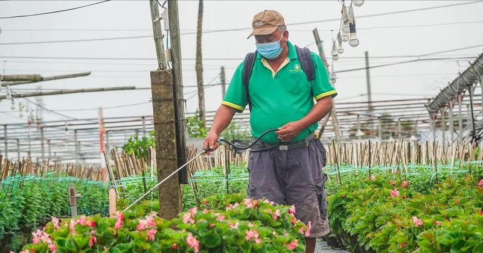
Nông dân bước vào kỷ nguyên số - Bài 2: Hình thành lớp nông dân chuyên nghiệp 🔗 MOI
Mở rộng không gian làm giàu từ nông nghiệp Ông Võ Tuấn Tú (64 tuổi, ở thôn Châu Trúc, xã Phù Mỹ Bắc, tỉnh Gia Lai) là một trong những nông dân tiêu biểu về chuyển dịch từ tư duy sản xuất sang tư duy k
Ông Trump từ chối 'phá băng' tài sản của Iran trước khi đạt thỏa thuận 🔗 MOI
Trong cuộc phỏng vấn được NBC News công bố hôm 7/6, Tổng thống Mỹ Donald Trump cho biết sẽ cân nhắc dỡ bỏ phong tỏa với tài sản bị đóng băng của Iran hoặc hủy các lệnh trừng phạt nhằm vào nước này, sa
Sao điền kinh Việt Nam giành huy chương vàng giải đấu danh giá Đài Bắc Trung Hoa 🔗 MOI
Bùi Thị Ngân tham dự Giải điền kinh New Taipei City Athletics Open và giành HCV cự ly 800m nữ - Ảnh: ĐKVN Bùi Thị Ngân thi đấu ở nội dung 800m nữ. Cô có ngày thể hiện ấn tượng, vượt qua các đối thủ vớ
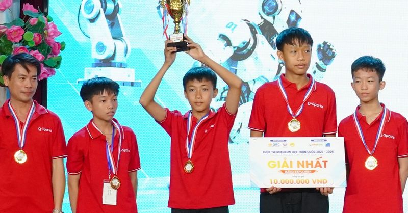
Từ con số 0 đến giải nhất toàn quốc cuộc thi Robocon ORC 🔗 MOI
Hai đội đoạt giải nhất Robocon ORC 2026 ở bảng Explorer. Đội Q-Sparks (mặc áo đỏ, từ trái qua): giáo viên hướng dẫn, đội trưởng Thiên Phúc, Hứa Huy Hùng, Nguyễn Tấn Phước, Nguyễn Quốc Khang Nguyên đều

Ấn phẩm 🔗 MOI
Tạp chí Kinh tế - Tài chính Online. Cơ quan chủ quản: Bộ Tài chính Giấy phép xuất bản số: 107/GP-BVHTTDL ngày 26/8/2025. Tạp chí Kinh tế - Tài chính Online: e-ISSN 3093-3498.

Chính phủ với doanh nghiệp 🔗 MOI
20/03/2026 (Chinhphu.vn) - Chính phủ ban hành Nghị quyết số 11/2026/NQ-CP về chi phí tiền lương Ngân hàng thương mại TNHH một thành viên Xây dựng Việt Nam, Ngân... 04/03/2026 (Chinhphu.vn) - Chính phủ
Luật Đô thị đặc biệt: 'Cú đấm thép' thể chế để TP.HCM vươn tầm siêu đô thị 🔗 MOI
Đ ể hiện thực hóa mục tiêu tăng trưởng hai con số và vươn lên thành trung tâm tài chính, công nghệ ngang tầm khu vực theo tinh thần Nghị quyết 09 của Bộ Chính trị , TP.HCM đang đứng trước một yêu cầu
Du lịch hè chờ cú hích mới 🔗 MOI
Giảm áp lực chi phí cho bầu trời mùa hè Trước mùa cao điểm du lịch hè , Bộ Xây dựng đề xuất tiếp tục giảm 50% một số khoản phí hàng không như phí cất hạ cánh và phí điều hành bay đối với các chuyến ba
4 thói quen chủ xe nên thay đổi ngay khi chuyển sang dùng xăng E10 🔗 MOI
Xăng sinh học có nhiều đặc tính khác biệt với xăng khoáng Theo Bộ Công Thương, xăng sinh học (xăng E5 và E10) là hỗn hợp giữa ethanol sinh học (E100) và xăng nền với tỷ lệ phối trộn theo khối lượng E1
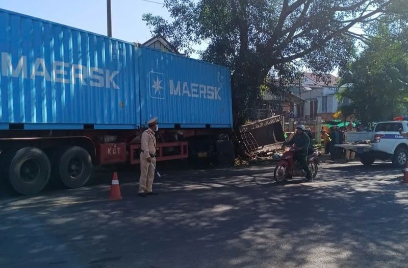
Tình trạng hai nạn nhân sống sót trong vụ tai nạn khiến 4 người tử vong ở Lâm Đồng 🔗 MOI
Ngày 7/6, lãnh đạo Bệnh viện Đa khoa vùng Tây Nguyên (tỉnh Đắk Lắk) cho biết, đơn vị đang tích cực điều trị và theo dõi sát tình trạng sức khỏe của hai nạn nhân bị thương trong vụ tai nạn giao thông đ
Nhà đầu tư chứng khoán "nín thở" trước biến số mới 🔗 MOI
TIN MỚI Nếu như đầu năm 2026, thị trường còn tranh luận FED sẽ giảm lãi suất bao nhiêu lần thì đến nay, câu hỏi đã chuyển sang liệu FED có phải tăng lãi suất trở lại vào cuối năm hay không. Theo ông B
Đúng ngày 13/6, siêu dự án Nhiệt điện 42.000 tỷ sẽ chạm cột mốc quyết định 🔗 MOI
TIN MỚI Toàn cảnh Trung tâm Điện lực Quảng Trạch. Ảnh: Ng.Tuấn (EVN) Dự án Nhà máy Nhiệt điện Quảng Trạch 1 đang tăng tốc triển khai các hạng mục phục vụ chạy thử Tổ máy 2, dự kiến thực hiện đốt lò lầ
EVN lãi đột biến gần 55.000 tỷ, lớn thứ 3 Việt Nam vượt qua Vinhomes và áp sát Viettel, khối tiền mặt tăng vọt lên 152.000 tỷ: Điều gì đã xảy ra? 🔗 MOI
TIN MỚI Sau khi Tập đoàn Điện lực Việt Nam (EVN) công bố báo cáo tài chính đã kiểm toán năm 2025 với con số lợi nhuận trước thuế đột biến lên tới 54.753 tỷ đồng – tăng 480% so với năm 2024, bảng xếp h

Trẻ sinh ra di truyền giang mai từ mẹ có điều trị được không? 🔗 MOI

Kiểm soát lạm phát trước những "biến số" cuối năm 🔗 MOI
Tài chính Tại Nghị quyết số 86/NQ-CP ngày 4/11/2025 về triển khai nhiệm vụ trọng tâm những tháng cuối năm 2025, Chính phủ tiếp tục yêu cầu về kiểm soát lạm phát, giữ vững ổn định kinh tế vĩ mô. Trong
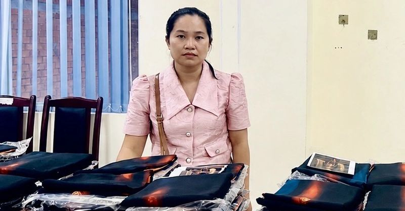
Dùng AI sao chép thiết kế áo dài, chủ thương hiệu vải 'Đất Lành' bị khởi tố 🔗 MOI
Cơ quan điều tra tống đạt quyết định khởi tố chủ sở hữu thương hiệu vải áo dài Đất Lành Ngày 7-6, Công an TP.HCM cho biết Cơ quan cảnh sát điều tra đã khởi tố vụ án, khởi tố bị can đối với bà Hoàng Th
Sau nhiều năm, cầu lông Trung Quốc lại lâm cảnh trắng tay 🔗 MOI
Các tay vợt Trung Quốc gây thất vọng ở giải cầu lông danh giá Indonesia mở rộng - Ảnh: BWF Trong làng cầu lông, Indonesia mở rộng thuộc nhóm 4 giải danh giá Super 1000, chỉ xếp dưới Wour Tour Finals t
Lễ hội Tài chính số 2026 sôi động đến giờ chót 🔗 MOI
Khách tham quan xếp hàng mua trà sữa nửa giá tại không gian trải nghiệm của JCB trước giờ bế mạc Sức hút của Lễ hội Tài chính số 2026 vẫn chưa hề hạ nhiệt ở thời điểm cận giờ bế mạc. Theo ban tổ chức,

Huy động tài chính xanh hướng tới mục tiêu phát triển bền vững 🔗 MOI
Pháp luật Chuyển đổi năng lượng xanh đã trở thành xu thế toàn cầu mang tính bắt buộc, gắn liền với mục tiêu Net Zero và yêu cầu cạnh tranh trong chuỗi cung ứng quốc tế. Trong bối cảnh đó, doanh nghiệp
Công an lập hồ sơ xử lý vụ hai người nghi bạo hành, ép trẻ em bán hàng rong ở TP.HCM 🔗 MOI
Công an phường Tam Thắng, TP.HCM làm việc với bà Đ.T.T. - người nghi bạo hành, ép nhiều trẻ em bán hàng rong - Ảnh: CACC Tối 7-6, Công an phường Tam Thắng (TP.HCM) cho biết đã làm việc với P.V.D. (31

Điều hành giá cả thị trường, kiểm soát lạm phát năm 2026 🔗 MOI
Pháp luật Chính sách tiền tệ và chính sách tài khóa là hai công cụ quản lý kinh tế vĩ mô quan trọng của các quốc gia. Mỗi một chính sách đều có mục tiêu riêng nhưng chung quy lại đều cùng theo đuổi mụ

Tạp chí Kinh tế Tài chính kỳ 3 tháng 4/2026 🔗 MOI
Tạp chí Kinh tế Tài chính kỳ 1 tháng 5/2026 🔗 MOI

Tạp chí Kinh tế Tài chính kỳ 2 tháng 5/2026 🔗 MOI
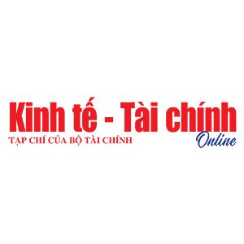
Ngân hàng - Bảo hiểm 🔗 MOI
An toàn thanh toán số: Bảo vệ người dùng, ngăn chặn lừa đảo Trong 5 tháng đầu năm 2026, với giải pháp an toàn trong thanh toán số, ngân hàng đã hỗ trợ cảnh báo hơn 4,5 triệu lượt khách hàng, giúp hơn

Kỷ niệm 51 năm Ngày Giải phóng miền Nam, thống nhất đất nước: Tự chủ chiến lược, kiến tạo thịnh vượng 🔗 MOI
Kinh tế Trong bối cảnh cạnh tranh thu hút đầu tư công nghệ ngày càng quyết liệt, Việt Nam đang chủ động mở cánh cửa ra thế giới để đón các “đại bàng công nghệ”, coi đây là động lực quan trọng để chuyể
Việt Nam - Lào tăng cường hợp tác tài chính giai đoạn 2026 - 2030 🔗 MOI
Bộ trưởng Tài chính Việt Nam Ngô Văn Tuấn và Phó Thủ tướng, Bộ trưởng Tài chính Lào Santiphab Phomvihane đã trao Thỏa thuận hợp tác giai đoạn 2026 - 2030 dưới sự chứng kiến của Thủ tướng hai nước. Bộ

Nước CHXHCN Việt Nam 🔗 MOI
© Cổng Thông tin điện tử Chính phủ Tổng Giám đốc: Nguyễn Hồng Sâm Trụ sở: 16 Lê Hồng Phong - Ba Đình - Hà Nội. Điện thoại: Văn phòng: 080 43162; Fax: 080.48924 Email: thongtinchinhphu@chinhphu.vn Bản

Diễn đàn Tương lai ASEAN 2026: Việt Nam thúc đẩy đối thoại vì một ASEAN gắn kết và bao trùm hơn 🔗 MOI
Facebook Twitter Lưu bài viết Bản in Copy link Diễn đàn Tương lai ASEAN (AFF) 2026 sắp diễn ra tại Hà Nội được đánh giá sẽ tiếp tục khẳng định vai trò của Việt Nam trong việc thúc đẩy đối thoại, tăng
Iran phóng tên lửa vào Israel, ông Trump kêu gọi ông Netanyahu không đáp trả 🔗 MOI
Theo hãng tin Al Jazeera, Lực lượng Vệ binh Cách mạng Hồi giáo Iran (IRGC) ngày 7/6 xác nhận đã phóng tên lửa tập kích căn cứ không quân Ramat David và nhiều khu vực khác ở Israel. "Cuộc không kích là
Christian Eriksen lại đổ gục trên sân cỏ, hủy trận giao hữu Đan Mạch – Ukraine 🔗 MOI
Sự việc diễn ra gần 5 năm sau sự cố ngừng tim của chính Christian Eriksen từng làm rúng động cả Euro 2021. Lần này, chuyện xảy ra không kém phần kịch tính khi trận giao hữu tại sân Odense đang diễn ti
Đường chạy thay đổi cuộc sống của chàng trai bại não 🔗 MOI
Từ những bước chạy đầu tiên trên bờ biển Đà Nẵng, chàng trai bại não dần tìm thấy sự tự tin, những người bạn mới và cả một hướng đi khác cho cuộc đời. Mới đây, đoạn clip ghi lại khoảnh khắc Gia Huy th
Đại sứ quán Mỹ tại Israel yêu cầu nhân viên sẵn sàng trú ẩn 🔗 MOI
Facebook Twitter Lưu bài viết Bản in Copy link Theo phóng viên TTXVN tại Israel, Đại sứ quán Mỹ tại Jerusalem đã yêu cầu toàn bộ nhân viên Chính phủ Mỹ cùng người thân chuẩn bị sẵn sàng vào nơi trú ẩn
Chiến sĩ công an lên sóng livestream: Đồng hành cùng sĩ tử 2K8 'vượt vũ môn' 🔗 MOI
Kết thúc ngày làm việc, Thượng úy Đỗ Văn Linh, cán bộ công an tỉnh Điện Biên lại bắt đầu một hành trình khác. Phía sau màn hình máy tính, anh trở thành người thầy trên không gian số, miệt mài truyền đ
Điểm nóng xung đột ngày 8-6: Nổ lớn ở Lebanon, Iran cảnh báo cho Israel "đau đớn" 🔗 MOI
Theo kênh Al Jazeera, có ít nhất 3 vụ nổ lớn xảy ra vào chiều 7-6 (giờ địa phương). Hiện chưa rõ đây là một vụ tấn công có chủ đích hay là một cuộc tấn công diện rộng nhắm vào các cơ sở hạ tầng của He
Đội tuyển Iran vẫn chật vật nhập cảnh Mỹ dù đã được duyệt visa 🔗 MOI
Theo thông tin từ CNN, ngay sau khi toàn đội tuyển Iran hạ cánh xuống Mexico, họ nhận được tin một số lượng lớn thành viên ban huấn luyện cùng nhiều quan chức chủ chốt chưa được cấp visa nhập cảnh vào
Bác sĩ cảnh báo 6 sai lầm phổ biến khiến thận bị hủy hoại 🔗 MOI
Bác sĩ Ngô Chính Triết (Wu Zheng-zhe), Ủy viên biên soạn "Hướng dẫn Chẩn đoán và Điều trị Lâm sàng Bệnh thận mãn tính Đài Loan 2025" , hiện là bác sĩ chủ trị khoa Thận học tại Bệnh viện Quách Tổng Hợp
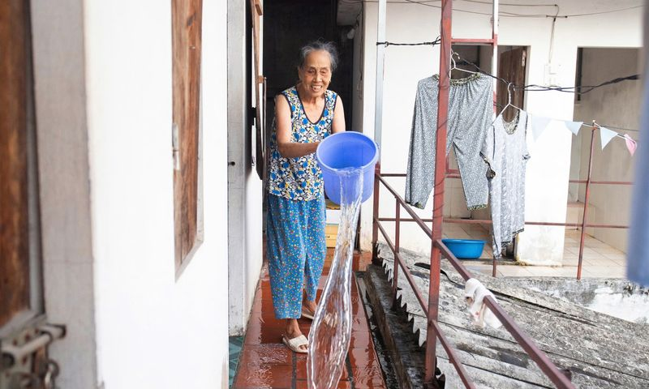
Xóm trọ công nhân thành 'lò nung' giữa mùa hè 🔗 MOI
Chiều 3/6, cả xóm trọ ở thôn Hậu Dưỡng, xã Thiên Lộc mất điện trong khi nhiệt độ ngoài trời lên gần 40 độ C. Chị Nguyễn Thị Hồng, 30 tuổi, quê Hà Tĩnh dắt hai con nhỏ rời căn phòng trọ 10 m2 ra cổng n
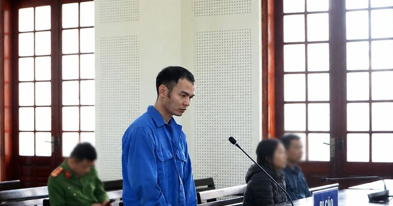
Mang dao tìm anh rể đòi 'công bằng' cho chị gái, người em nhận án tù dài 🔗 MOI
Nhát dao sau cuộc điện thoại báo trước Buổi sáng tại phòng xử án Tòa án nhân dân tỉnh Nghệ An, Nguyễn Văn Ninh (SN 1986, trú xã Văn Kiều, Nghệ An) lặng lẽ đứng trước bục khai báo. Dáng người gầy gò, k
Cử nhân Ngoại thương thành thủ khoa kỹ sư AI ở Bách khoa Hà Nội 🔗 MOI
Nguyễn Thị Huyền, 26 tuổi, vừa tốt nghiệp kỹ sư chuyên sâu đặc thù Trí tuệ nhân tạo Tạo sinh (GenAI) của Đại học Bách khoa Hà Nội (HUST) với điểm tổng kết 3.96/4. Đây là chương trình học tương đương t
Diễn đàn Tương lai ASEAN 2026: Hòa bình, thịnh vượng và phát triển, lấy người dân làm trung tâm 🔗 MOI
Khẳng định vị thế trung tâm Theo thông tin từ Bộ Ngoại giao, AFF được tổ chức lần đầu vào tháng 4-2024 tại Hà Nội với chủ đề “Xây dựng Cộng đồng ASEAN phát triển nhanh, bền vững, lấy người dân làm tru
Cuộc sống kín tiếng của NSND Hồng Tuấn phim 'Của để dành' là Trung tá công an 🔗 MOI
Liên hệ với NSND Hồng Tuấn vài lần anh mới bắt máy với lý do điện thoại luôn tắt chuông bởi nhà có trẻ con. Cách đây vài tháng, ở tuổi 58, anh mới có cháu đích tôn. Nghệ sĩ ở với con trai lớn và cháu
Nữ ‘quan tham’ Trung Quốc dùng tiền nhận hối lộ bao nuôi tình trẻ vị thành niên 🔗 MOI
Lời tòa soạn Từng nắm giữ các vị trí quan trọng trong bộ máy chính quyền Trung Quốc nhưng một số nữ quan chức đã sa ngã, dùng tiền bạc đổi lấy sắc dục hoặc dâng hiến nhan sắc để có được quyền lực. Nhữ
Chiến sự Trung Đông ngày 101: Iran nã loạt tên lửa sang Israel, ông Trump và ông Netanyahu họp khẩn 🔗 MOI
Tình hình Trung Đông tiếp tục xuất hiện nhiều diễn biến đáng chú ý. Iran nã tên lửa vào Israel, lần đầu kể từ lệnh ngừng bắn Lực lượng Vệ binh Cách mạng Hồi giáo Iran (IRGC) cho biết đã tấn công căn c
Không quân Nga thả bom FAB-500 phá tung cứ điểm Ukraine ở tiền tuyến 🔗 MOI
Theo kênh Zvezda, Bộ Quốc phòng Nga ngày 7/6 đã đăng tải đoạn video ghi lại cảnh không quân nước này oanh tạc nhiều mục tiêu quân sự của Ukraine ở tiền tuyến Dnipropetrovsk và Kherson. "Đợt tấn công s
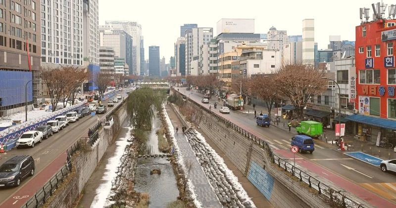
Hồi sinh cảnh quan môi trường đô thị châu Á 🔗 MOI
Vùng du lịch đặc biệt Việc tìm kiếm sự cân bằng giữa phục hồi sinh thái, bảo tồn di sản công nghiệp và đảm bảo quyền tiếp cận bình đẳng cho mọi tầng lớp nhân dân chính là chìa khóa cho sự phát triển b
Gia đình có hai con mắc bệnh hiểm nghèo 🔗 MOI
Chị Siu H’Truin cùng 2 con mắc bệnh hiểm nghèo. Ảnh: HPHH Gia đình thuộc diện hộ cận nghèo, vừa được hỗ trợ xây dựng nhà ở theo chương trình xóa nhà tạm, nhà dột nát. Nguồn thu nhập chủ yếu dựa vào cô
Cựu binh Mỹ góp sức tìm kiếm hài cốt liệt sĩ 🔗 MOI
Chiều 7-6, bước qua các không gian trưng bày của Bảo tàng Lịch sử TPHCM, người đàn ông 80 tuổi nhiều lần dừng lại trước những hiện vật gắn với lịch sử hình thành và phát triển của TPHCM và Việt Nam; c
Đại gia làm giàu nhờ khai thác khoáng sản trái phép, các cán bộ bị gọi tên 🔗 MOI
Khoáng sản trị giá hơn 864 tỷ đồng bị thất thoát ở Yên Bái Ông Đoàn Văn Huấn (người từng ngồi ghế Chủ tịch HĐQT kiêm TGĐ Công ty Thái Dương) bị cáo buộc khai thác trái phép đất hiếm khi ra tòa đã khai
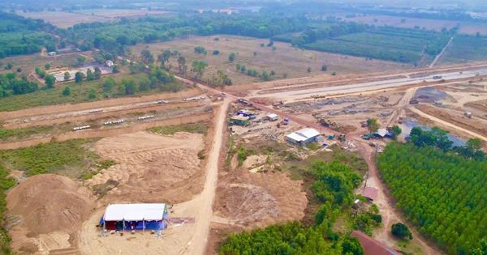
Bảo đảm nơi an cư cho hàng chục ngàn hộ dân 🔗 MOI
Thông tin từ UBND TP Đồng Nai cho hay thành phố đã cơ bản hoàn tất các thủ tục đầu tư, giải phóng mặt bằng, chuẩn bị nguồn lực khởi công 6 dự án hạ tầng giao thông trọng điểm: cầu Mã Đà, đường Vành đa
Hỗ trợ nông dân sản xuất, kinh doanh giỏi lập doanh nghiệp 🔗 MOI
Đại hội quy tụ 598 đại biểu chính thức, đại diện cho ý chí, nguyện vọng và trí tuệ của hơn 10 triệu cán bộ, hội viên nông dân trên cả nước. Phát biểu khai mạc ngày làm việc thứ nhất của Đại hội, ông P
Lịch trực tiếp U19 Đông Nam Á ngày 8-6: Thái Lan chạm trán Malaysia 🔗 MOI
Lịch trực tiếp U19 Đông Nam Á ngày 8-6: Thái Lan chạm trán Malaysia - Đồ họa: AN BÌNH Lúc 20h ngày 8-6 sẽ diễn ra lượt trận cuối bảng B Giải vô địch U19 Đông Nam Á 2026 giữa U19 Thái Lan - U19 Malaysi

Tập đoàn VNG lên kế hoạch có lãi trở lại sau 4 năm, không chia cổ tức 🔗 MOI
Tập đoàn VNG đặt mục tiêu năm nay lãi trước thuế từ 300 - 450 tỷ đồng, chấm dứt giai đoạn lỗ kéo dài 4 năm liên tiếp. CTCP Tập đoàn VNG (UpCOM: VNZ) vừa công bố tài liệu họp đại hội đồng cổ đông (ĐHĐC

Huy động nguồn lực cho tăng trưởng xanh 🔗 MOI
Pháp luật Bài viết phân tích tiềm năng, thực trạng và định hướng phát triển các mô hình du lịch biển tại Việt Nam nhằm hướng tới một nền kinh tế biển xanh, bền vững. Với đường bờ biển dài hơn 3.260 km
Hướng tới World Cup 2026: Công nghệ và dữ liệu lên ngôi 🔗 MOI
Tiếng hò reo trên khán đài, giọt nước mắt sau thất bại hay niềm hạnh phúc vỡ òa khi ghi bàn sẽ không bao giờ thay đổi Đây có thể là kỳ World Cup cuối cùng thuộc về thời đại bóng đá truyền thống trước
Tham vọng đưa Việt Nam vào bản đồ công nghệ điều trị đột quỵ 🔗 MOI
Thông tin trên được TS.BS Trần Chí Cường, Chủ tịch Hội Can thiệp thần kinh TPHCM, Giám đốc chuyên môn Bệnh viện Đa khoa Quốc tế S.I.S Cần Thơ chia sẻ tại buổi gặp gỡ báo chí (ngày 6/6) nhân dịp kỷ niệ
VN bứt phá bằng KH-CN: Chiến lược xây dựng nguồn nhân lực STEM 🔗 MOI
C HUYỂN TỪ ĐÀO TẠO NHÂN LỰC SANG KIẾN TẠO NĂNG LỰC QUỐC GIA PGS-TS Phan Thanh Bình, nguyên Chủ nhiệm Ủy ban Văn hóa, Giáo dục, Thanh niên, Thiếu niên và Nhi đồng của Quốc hội, nhìn nhận hiện nay cuộc

Xoắn dây tinh và thời gian vàng cấp cứu 🔗 MOI

Bộ Tài chính đồng hành cùng doanh nghiệp nhỏ và vừa trên hành trình chuyển đổi kép 🔗 MOI
Chuyển đổi số Trong bối cảnh tiêu chuẩn ESG, yêu cầu Net Zero và sức ép cạnh tranh toàn cầu ngày càng gia tăng, phần lớn doanh nghiệp Việt Nam, đặc biệt là doanh nghiệp nhỏ và vừa đang đối mặt với kho
Zverev giành danh hiệu Grand Slam đầu tiên trong sự nghiệp 🔗 MOI
Zverev tỏa sáng ở giải quần vợt Roland Garros - Ảnh: REUTERS Tối 7-6 (giờ Việt Nam), Zverev bước vào trận chung kết đơn nam Roland Garros - chạm trán hạt giống số 10 người Ý Flavio Cobolli. Ở Roland G

Báo cáo tài chính doanh nghiệp 🔗 MOI
Tổng tài sản của VNPT đến cuối năm 2025 đạt 119.610,3 tỷ đồng, tăng gần 6%. Trong đó, hàng tồn kho tăng hơn 3 lần lên 4.711,4 tỷ đồng, chủ yếu do nguyên liệu, vật liệu và chi phí sản xuất kinh doanh d
Bí ẩn chiều cao ngọn Everest và câu chuyện cộng thêm để tránh nghi ngờ 🔗 MOI
TIN MỚI Đỉnh Everest cao bao nhiêu? Đây thực sự là một câu hỏi gây nhiều tranh luận trong giới khoa học, với nhiều kết quả khác nhau tùy thuộc vào phương pháp và tiêu chuẩn đo đạc. Đỉnh Everest - biểu
Xây dựng và phát triển TP HCM trong kỷ nguyên mới: Biến lợi thế sông biển thành sức bật 🔗 MOI
Từ Nghị quyết 09 của Bộ Chính trị vừa ban hành đến Luật Đô thị đặc biệt đang được xây dựng, TP HCM đang đứng trước cơ hội lịch sử gỡ bỏ các rào cản thủ tục, gắn kết những dự án hạ tầng rời rạc thành m
Ảnh dự thi: 'Vượt nắng thắng mưa' trên các công trình 🔗 MOI
An toàn giao thông trong thi công điện tại Củ Chi (TP.HCM) khi những người thợ điện mỗi người một việc vào vị trí công tác. Mỗi người một việc (hình chụp vào ngày 23.3.2023) Ảnh: NGUYỄN MẠNH CƯỜNG Tha
Zverev thắng nghẹt thở chung kết Roland Garros, lần đầu vô địch Grand Slam 🔗 MOI
Highlights Alexander Zverev 3-2 Flavio Cobolli (nguồn: Roland Garros) Alexander Zverev cuối cùng đã chạm tay vào danh hiệu Grand Slam đầu tiên trong sự nghiệp sau nhiều năm chờ đợi. Trong trận chung k
Khép lại trận đấu hơn 4 giờ, Zverev chạm đỉnh cao Grand Slam sau hơn một thập kỷ đợi chờ 🔗 MOI
Tại Paris, Alexander Zverev cuối cùng đã hoàn thành giấc mơ lớn nhất sự nghiệp khi đánh bại Flavio Cobolli 3-2 trong trận chung kết Roland Garros 2026 để giành danh hiệu Grand Slam đầu tiên. Dù bị Cob
Củng cố vai trò trung tâm của ASEAN 🔗 MOI
Diễn đàn Tương lai ASEAN (ASEAN Future Forum - AFF) năm 2026 diễn ra trong 2 ngày 9 và 10-6 tại Hà Nội. Thứ trưởng Bộ Ngoại giao Nguyễn Mạnh Cường nhấn mạnh AFF năm nay được thiết kế như một không gia
Cuộc đua phát triển máy tính AI làm việc thay con người 🔗 MOI
Theo CNN , các tập đoàn công nghệ lớn đã cố gắng phát triển máy tính có thể thay con người dùng xử lý nhiệm vụ phức tạp trong ít nhất một thập kỷ qua. Tuy nhiên, phần lớn nỗ lực đều thất bại, những tr

Hiểu đúng thí điểm vùng phát thải thấp từ 1-7: Không cấm hết xe máy xăng như lời đồn 🔗 MOI
Chi tiết khu vực dự kiến thí điểm vùng phát thải thấp tại Hà Nội từ ngày 1-7-2026 - Ảnh: VTV Từ ngày 1-7, Hà Nội bắt đầu triển khai thí điểm vùng phát thải thấp (Low Emission Zone - LEZ) tại 9 phường

Hàng ngàn du khách trải nghiệm hơn 100 gian hàng tại lễ hội ven biển Đà Nẵng 🔗 MOI
Gian hàng ẩm thực tại lễ hội Đà Nẵng đang bước vào mùa cao điểm du lịch hè với nhiều lễ hội sôi động như Lễ hội pháo hoa quốc tế (DIFF) 2026. An Hải Festival được kỳ vọng tạo thêm sản phẩm du lịch mới
Lịch thi đấu AVC Cup ngày 8-6: Bóng chuyền nữ Việt Nam đấu Indonesia 🔗 MOI
Lịch thi đấu AVC Cup 2026 ngày 8-6 - Đồ họa: AN BÌNH Màn so tài giữa tuyển bóng chuyền nữ Việt Nam và Indonesia sẽ diễn ra lúc 17h. Đây là trận đấu duy nhất tại vòng bảng mà đoàn quân HLV Nguyễn Tuấn

quản lý ngân sách hiệu quả, phục vụ chính quyền địa phương 2 cấp 🔗 MOI
Tài chính Không chỉ tinh gọn, sắp xếp bộ máy và kịp thời tham mưu, ban hành, triển khai các văn bản hướng dẫn về kế toán phục vụ mô hình chính quyền địa phương 2 cấp, tham gia các đoàn công tác cùng B
CLB Becamex TP.HCM rớt hạng V-League sau 22 năm 🔗 MOI
Bùi Vĩ Hào ghi bàn nhưng Becamex TP.HCM vẫn rớt hạng - Ảnh: ANH KHOA Trước vòng đấu cuối cùng của mùa giải, CLB Becamex TP.HCM không còn quyền tự quyết tấm vé rớt hạng. Họ buộc phải thắng và chờ kết q
Bảng xếp hạng chung cuộc V-League 2025-2026 🔗 MOI
Bảng xếp hạng V-League 2025-2026 chung cuộc: Becamex TP.HCM chính thức rớt hạng - Đồ họa: AN BÌNH Tối 7-6, ba đội xếp cuối bảng là SHB Đà Nẵng (thắng Đông Á Thanh Hóa 4-0), PVF-CAND (thắng Sông Lam Ng
Diều xuất hiện gần sân bay Nội Bài khiến 7 chuyến bay bị ảnh hưởng 🔗 MOI
Trong hai ngày 6 và 7-6, UAV và diều xuất hiện gần sân bay Nội Bài khiến hơn 20 chuyến bay bị ảnh hưởng - Ảnh minh họa: NIA Vụ việc diều xuất hiện gần sân bay Nội Bài được phi công chuyến bay VN414 củ
Bế mạc Ngày Tài chính số 2026: hơn 40.000 phần quà được trao và nhiều con số biết nói 🔗 MOI
Ban tổ chức tặng quà tri ân các đơn vị đồng hành, đối tác tại lễ bế mạc Lễ hội Tài chính số 2026 - Ảnh: QUANG ĐỊNH Tối 7-6, Lễ hội Tài chính số 2026 đã bế mạc với sự tham dự của hàng ngàn khán giả tại
Cố vượt đường ngang khi cần chắn hạ xuống, xe tải bị tàu SE19 húc văng 🔗 MOI
Chiếc xe mắc lại ở đường ngang, bị tàu hỏa húc văng - Ảnh: D.C. Vụ tai nạn giữa xe tải và tàu hỏa xảy ra khoảng 20h ngày 7-6 tại Km14+700 khu gian Văn Điển - Thường Tín (Hà Nội). Lúc này, xe tải biển
U19 Myanmar giúp U19 Việt Nam lạc quan hơn sau trận thua Indonesia 🔗 MOI
U19 Myanmar (phải) mang đến tin vui cho U19 Việt Nam - Ảnh: AFF Trước thềm lượt trận cuối cùng của bảng A, U19 Myanmar xếp chót vì kém hiệu số so với U19 Timor-Leste. Cả hai chưa có điểm nào, nhưng My
Hạ cả Quang Dương và Lý Hoàng Nam, Phúc Huỳnh xứng danh số 1 đánh đơn pickleball 🔗 MOI
Hai tay vợt đánh đơn hàng đầu Việt Nam phân tài cao thấp - Ảnh: BTC Tối 7-6, Giải pickleball Michelob Ultra châu Á 2026 chứng kiến cột mốc quan trọng. Đó là tìm ra tay vợt đánh đơn số 1 Việt Nam. Cái

Từ câu hỏi 'cài lậu được không?' đến 'bản quyền xài được bao lâu?' 🔗 MOI
Nhiều người dùng, doanh nghiệp tận dụng các phần mềm miễn phí của Google thay thế Microsoft Office Từng có thời kỳ, việc cài đặt phần mềm lậu (crack) là giải pháp "tiết kiệm" của nhiều cá nhân, doanh
Nhìn từ Thâm Quyến: Xe công nghệ bão hòa, tài xế quá nhiều, shipper cũng lao đao 🔗 MOI
Hành khách sử dụng xe công nghệ Didi tại sân bay quốc tế Hồng Kiều, Thượng Hải - Ảnh: REUTERS Theo một báo cáo của Sở Giao thông vận tải TP Thâm Quyến công bố ngày 25-5, thị trường xe công nghệ tại T
Thời tiết hôm nay 8-6: Bắc Bộ mưa lớn từ chiều nay, Trung Bộ nắng nóng 🔗 MOI
Từ chiều tối nay thời tiết Bắc Bộ có mưa to - Ảnh: NAM TRẦN Trung tâm Dự báo khí tượng thủy văn quốc gia cho biết hôm nay 8-6, thời tiết đồng bằng Bắc Bộ và phía nam Phú Thọ nắng nóng, có nơi nắng nón
Tiền vệ Đan Mạch Christian Eriksen lại đổ gục trên sân nghi đột quỵ lần 2, trận đấu bị hủy 🔗 MOI
Cầu thủ Đan Mạch và Ukraine quây thành vòng tròn để bảo vệ cho Eriksen sau khi anh đổ gục - Ảnh: AFP Trận giao hữu giữa Đan Mạch và Ukraine tại thành phố Odense buộc phải dừng lại ở phút 65. Eriksen v
Ngắm 11 không gian trải nghiệm ấn tượng nhất tại Lễ hội Tài chính số 2026 🔗 MOI
Đại diện 11 không gian trải nghiệm ấn tượng nhất được vinh danh các không gian trải nghiệm ấn tượng - Ảnh: QUANG ĐỊNH Theo ban tổ chức, các đơn vị được bình chọn dựa trên nhiều tiêu chí bao gồm: mức đ
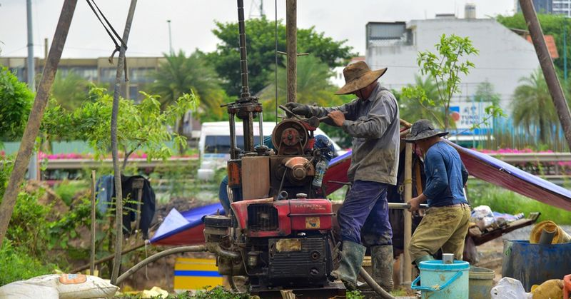
Quyết tâm phê duyệt hướng tuyến metro số 6 đoạn sân bay Tân Sơn Nhất - Phú Hữu trong tháng 6-2026 🔗 MOI
Metro số 6 giai đoạn 1 đoạn Bà Quẹo - Phú Hữu sẽ kết nối với đường sắt Thủ Thiêm - Long Thành tại ga Phú Hữu. Trong ảnh là các đơn vị tư vấn đang khoan khảo sát địa chất trên đường Song Hành, phường B
Cây cầu 1.800 tỉ đồng sẽ thay thế cầu Đuống cũ, khép lại hành trình lịch sử hơn 120 năm 🔗 MOI
Dự án xây dựng cầu Đuống mới có tổng mức đầu tư hơn 1.800 tỉ đồng, gồm 2 đơn nguyên là cầu đường sắt và cầu đường bộ vượt sông - Ảnh: HỒNG QUANG Cầu Đuống (Hà Nội) là một trong những công trình giao t

Góc chuyên gia & nhà quản lý 🔗 MOI
Bộ Tài chính đã và đang nỗ lực không ngừng để cải cách thủ tục hành chính, bảo đảm các lĩnh vực thuộc phạm vi quản lý nhà nước của Bộ Tài chính luôn thông suốt theo mô hình chính quyền địa phương 2 cấ

Đổi mới công tác xây dựng và thi hành pháp luật: Dấu ấn 1 năm thực hiện Nghị quyết số 66-NQ/TW 🔗 MOI
Tài chính Trong tiến trình phát triển đất nước, cải cách thể chế luôn được xác định là khâu đột phá để khơi thông nguồn lực và nâng cao năng lực cạnh tranh quốc gia. Trên nền tảng những chuyển động mạ

nhà đất công đôi dư 🔗 MOI
Tài chính Đằng sau hàng chục nghìn cơ sở nhà, đất công chưa được xử lý dứt điểm không chỉ là câu chuyện thủ tục hay hồ sơ pháp lý, mà còn là tâm lý e ngại trách nhiệm trong quá trình thực thi. Mệnh lệ
Thủ tướng Lê Minh Hưng chủ trì lễ đón chính thức Thủ tướng Lào 🔗 MOI
Chiều 7/6, tại trụ sở Chính phủ, Thủ tướng Lê Minh Hưng đã chủ trì lễ đón Thủ tướng Lào Sonexay Siphandone thăm chính thức Việt Nam và tham dự Diễn đàn Tương lai ASEAN lần thứ ba. Chuyến thăm chính th

Hoạt động của Lãnh đạo Bộ Tài chính 🔗 MOI
Bộ Tài chính đã và đang nỗ lực không ngừng để cải cách thủ tục hành chính, bảo đảm các lĩnh vực thuộc phạm vi quản lý nhà nước của Bộ Tài chính luôn thông suốt theo mô hình chính quyền địa phương 2 cấ

Chính phủ với công dân 🔗 MOI
07/06/2026 (Chinhphu.vn) - Thí sinh Mai Thị Dung hỏi, trường hợp chọn tổ hợp xét tuyển là Toán - Ngữ Văn - Tiếng Anh nhưng chọn miễn thi ngoại ngữ thì sẽ dùng... 07/06/2026 (Chinhphu.vn) - Ông Huỳnh C
Xung đột Hamas-Israel: Hamas ra điều kiện giải giáp tại Dải Gaza 🔗 MOI
Facebook Twitter Lưu bài viết Bản in Copy link Các nguồn tin Ai Cập ngày 7/6 dẫn thông tin từ phong trào Hamas khẳng định tiến trình giải giáp của lực lượng này tại Dải Gaza phụ thuộc vào việc Israel
Becamex TP HCM - Ba nguy cơ sau khi rớt hạng 🔗 MOI
Buồn hơn nữa khi họ xuống hạng ngay trên sân nhà, ngay sau mùa giải đổi tên, và ngay sau trận thắng Hoàng Anh Gia Lai (HAGL) 3-1. Một chiến thắng không cứu nổi cả mùa giải Nỗi đau thêm chồng chất khi
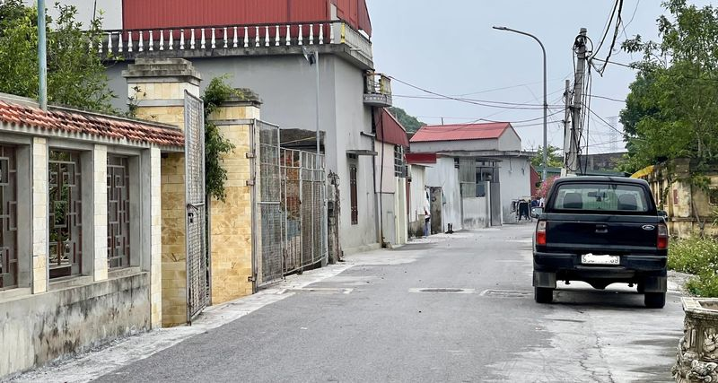
Mua đất bằng giấy viết tay trước 1993: Có được cấp sổ đỏ, miễn tiền sử dụng đất? 🔗 MOI
Cục Quản lý đất đai (Bộ Nông nghiệp và Môi trường) vừa có công văn số 2424 trả lời phản ánh, kiến nghị của công dân liên quan đến quy định cấp giấy chứng nhận quyền sử dụng đất (sổ đỏ) đối với trường
Đại học Khoa học - Nơi hội tụ vẻ đẹp trí tuệ và vẻ đẹp thanh xuân 🔗 MOI
Thưa PGS.TS Nguyễn Văn Đăng, được biết Trường Đại học Khoa học – Đại học Thái Nguyên sẽ đăng cai chương trình giao lưu và tuyển sinh cuộc thi Hoa hậu Việt Nam 2026 vào ngày 9/6/2026. Đây là chương trì
Người đang tạo nên cơn địa chấn trước World Cup 2026 đã đến Việt Nam 🔗 MOI
Sau 5 ngày phát hành, MV World Cup (Champions) của IShowSpeed vượt mốc 25 triệu lượt xem trên YouTube, trở thành một trong những sản phẩm âm nhạc gây chú ý nhất trước thềm World Cup 2026. Dù không phả
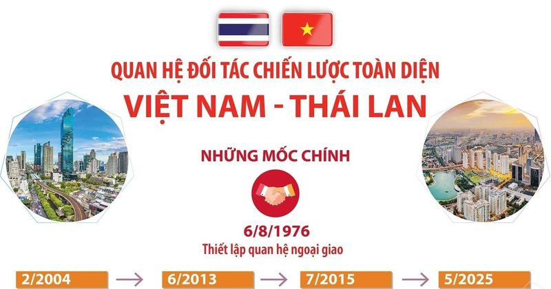
Quan hệ Đối tác Chiến lược Toàn diện Việt Nam-Thái Lan 🔗 MOI
Facebook Twitter Lưu bài viết Bản in Copy link Nhận lời mời của Thủ tướng Chính phủ Lê Minh Hưng, Thủ tướng Vương quốc Thái Lan Anutin Charnvirakul thăm chính thức Việt Nam và tham dự Diễn đàn Tương l
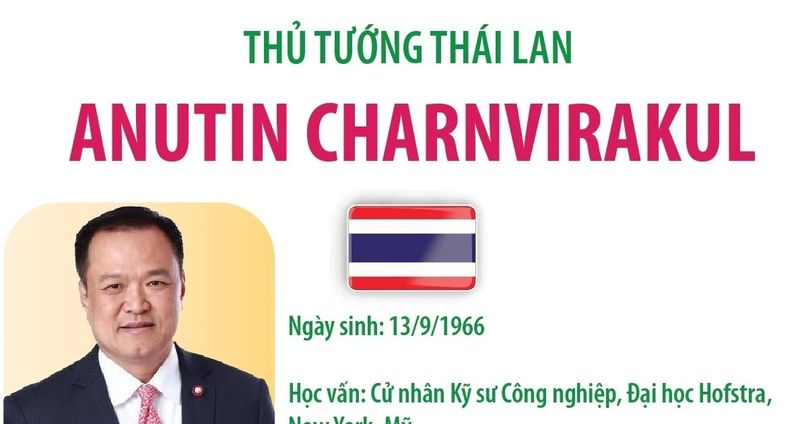
Thủ tướng Vương quốc Thái Lan Anutin Charnvirakul 🔗 MOI
Facebook Twitter Lưu bài viết Bản in Copy link Nhận lời mời của Thủ tướng Chính phủ nước Cộng hòa xã hội chủ nghĩa Việt Nam Lê Minh Hưng, Thủ tướng Vương quốc Thái Lan Anutin Charnvirakul thăm chính t
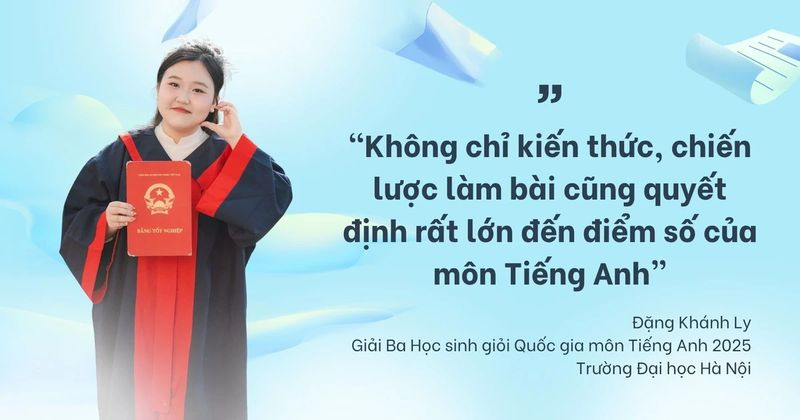
Nữ sinh đoạt giải Quốc gia môn Tiếng Anh chia sẻ cách ôn tập hiệu quả trước kỳ thi THPT 🔗 MOI
“Không chỉ kiến thức, chiến lược làm bài cũng quyết định rất lớn đến điểm số của môn Tiếng Anh”. (Đặng Khánh Ly - giải Ba kỳ thi Học sinh giỏi Quốc gia môn Tiếng Anh, năm 2025). Những ngày cuối nên tậ
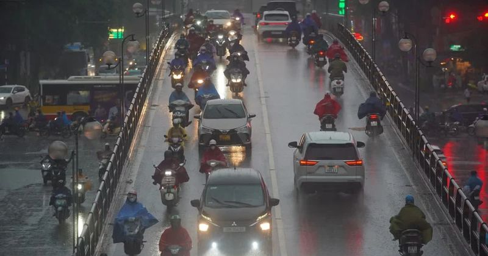
Gió mùa đông bắc tràn về từ chiều tối nay, mưa rất lớn, nền nhiệt giảm sâu 🔗 MOI
Trung tâm Dự báo Khí tượng Thủy văn Quốc gia cho biết, khoảng chiều tối nay, không khí lạnh bắt đầu ảnh hưởng đến vùng núi phía Bắc. Đêm 8/6 và ngày 9/6, không khí lạnh mở rộng ảnh hưởng đến các nơi k
Con gái lấy chồng cách nhà 6 bước chân, bố mẹ sang thông gia chơi 10 lần/ngày 🔗 MOI
Lời căn dặn đặc biệt của mẹ Câu chuyện lấy chồng cùng xóm đã trở thành gia vị đặc biệt trong cuộc sống của chị Trần Thị Hiển (SN 1992, Nghệ An) suốt 13 năm qua. Cho đến giờ, chị vẫn xem chuyện lấy chồ
'Dưới ô cửa sáng đèn' tập 10: Dương chính thức rơi vào bẫy tình của tiểu tam 🔗 MOI
Trong Dưới ô cửa sáng đèn tập 10 lên sóng tối 8/6, sau nhiều ngày im lặng, cuối cùng Trang (Thanh Tâm) cũng chịu phản hồi Dương (Tiến Lộc). Khi Dương tới nhà, Trang hỏi: "Anh có còn yêu vợ anh không?
Thông điệp hạt nhân của Bình Nhưỡng trước thượng đỉnh Trung - Triều 🔗 MOI
Hãng thông tấn Trung ương Triều Tiên (KCNA) ngày 7.6 dẫn lời bà Kim Yo-jong, Trưởng ban Tổng vụ thuộc Ủy ban T.Ư đảng Lao động Triều Tiên, tuyên bố rằng chương trình hạt nhân của nước này là "tuyệt đố
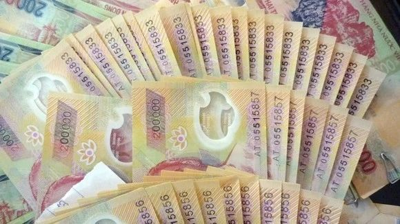
Cảnh báo xuất hiện tiền giả loại mới mệnh giá 100.000 đồng và 200.000 đồng 🔗 MOI
Theo Phòng An ninh kinh tế (Công an tỉnh Thái Nguyên) thời gian gần đây, trên địa bàn cả nước xuất hiện một số loại tiền giả loại mới mệnh giá 100.000 đồng và 200.000 đồng. Tiền giả loại mới này có mộ
Eriksen lại đổ gục trên sân 🔗 MOI
Eriksen thi đấu từ đầu và gục xuống sân sau khi ôm vùng ngực dưới ở phút 65, lúc Đan Mạch đang dẫn 2-1 trên sân Odense. Đội ngũ y tế lập tức tiếp cận trong vài giây và tiến hành sơ cứu ngay trên sân,
Tổ chức kỳ thi tốt nghiệp THPT an toàn, nghiêm túc 🔗 MOI
Kỳ thi tốt nghiệp THPT năm 2026 được tổ chức tại 2.487 điểm với gần 50.000 phòng thi trên cả nước. Kết quả thi sẽ được công bố vào lúc 8 giờ ngày 1-7, sớm hơn khoảng 12 ngày so với năm trước. Không để
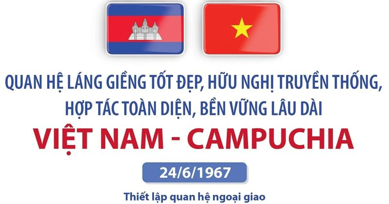
Quan hệ láng giềng tốt đẹp, hữu nghị truyền thống, hợp tác toàn diện, bền vững lâu dài Việt Nam-Campuchia 🔗 MOI
Facebook Twitter Lưu bài viết Bản in Copy link Nhận lời mời của Thủ tướng Chính phủ Lê Minh Hưng, Thủ tướng Vương quốc Campuchia Samdech Moha Borvor Thipadei Hun Manet thăm chính thức Việt Nam và tham
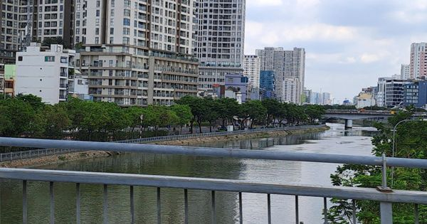
Thành phố tiếp tục vươn cao, bay xa 🔗 MOI
Theo đó, sự phát triển của bán đảo Thủ Thiêm, khu Đông, khu Nam... hay cảnh vật, môi trường chạy dọc hơn 20 km tuyến đường xuyên tâm là đại lộ Đông Tây như những minh chứng cho nỗ lực của TP HCM hướng
Không được dự World Cup, tiền vệ Real sang Havard học kinh doanh 🔗 MOI
Tiền vệ 23 tuổi từng vào sân thay người và thi đấu 49 phút trong trận chung kết World Cup 2022. Tuy nhiên, sau khi trải qua mùa giải 2025-2026 không thành công ở phương diện cá nhân lẫn tập thể tại Re
Đừng đánh tráo khái niệm "tự do" với "vô pháp luật"! 🔗 MOI
Sự bùng nổ của internet, mạng xã hội và gần đây là các công cụ trí tuệ nhân tạo (AI) đang mở rộng "biên độ" tự do ngôn luận của người dân hơn bao giờ hết. Thế nhưng, việc các cơ quan chức năng xử lý n
Độc thân ở tuổi U40, nữ quản lý nói điều khiến nhiều người suy ngẫm về hôn nhân 🔗 MOI
Tuổi kết hôn trung bình của người trẻ ngày càng tăng. Nhiều người chọn ưu tiên sự nghiệp, tự do cá nhân hoặc chưa sẵn sàng bước vào đời sống gia đình. Song song với đó là những áp lực vô hình từ gia đ
Doanh trại tuyển Thụy Sĩ ở World Cup 2026 bị bao vây bởi ổ rắn 🔗 MOI
Tuyển Thụy Sĩ đã đáp chuyến bay đến San Diego để chuẩn bị cho trận mở màn World Cup 2026 gặp Qatar vào ngày 14/6. Bên cạnh việc phải thích nghi với thời tiết nắng nóng và độ ẩm cao tại Mỹ, thầy trò HL
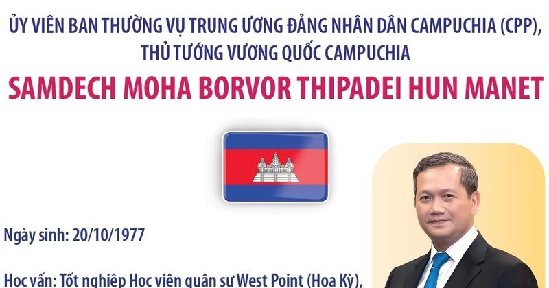
Thủ tướng Vương quốc Campuchia Samdech Moha Borvor Thipadei Hun Manet 🔗 MOI
Facebook Twitter Lưu bài viết Bản in Copy link Nhận lời mời của Thủ tướng Chính phủ nước Cộng hòa xã hội chủ nghĩa Việt Nam Lê Minh Hưng, Thủ tướng Vương quốc Campuchia Samdech Moha Borvor Thipadei Hu
Iran tung đòn tấn công đầu tiên sau lệnh ngừng bắn, Israel đáp trả mạnh mẽ 🔗 MOI
Facebook Twitter Lưu bài viết Bản in Copy link Đêm 7/6 (theo giờ địa phương), còi báo động đã vang lên trên nhiều khu vực ở miền Bắc Israel trong bối cảnh Iran tiến hành các đợt tấn công bằng tên lửa
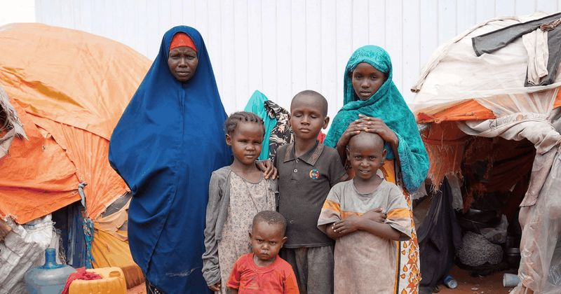
Hàng triệu người đang chịu đói vì cuộc chiến Iran, thế giới phải hành động 🔗 MOI
(PLO)- Liên Hợp Quốc cho biết hàng triệu người đang chật vật đáp ứng nhu cầu lương thực thiết yếu và nhiều người đã rơi vào tình trạng đói nghiêm trọng do cuộc chiến ở Iran. Khi cuộc xung đột giữa Mỹ

Kết quả bóng đá hôm nay 8/6: Modric giúp Croatia hạ Slovenia 🔗 MOI
Kết quả bóng đá hôm nay NGÀY GIỜ TRẬN ĐẤU TRỰC TIẾP GIẢI VÔ ĐỊCH U19 ĐÔNG NAM Á 2026 07/06 20:00 U19 Việt Nam 1-2 U19 Indonesia TV360 07/06 20:00 U19 Timor-Leste 1-3 U19 Myanmar TV360 GIAO HỮU CÁC ĐTQ
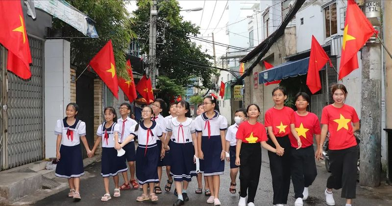
Xây dựng phường, xã xã hội chủ nghĩa trên địa bàn TPHCM 🔗 MOI
Vấn đề đặt ra là TPHCM cần bắt đầu từ đâu, triển khai như thế nào để chủ trương ấy đi vào đời sống một cách thiết thực, phù hợp điều kiện của một đô thị đặc biệt, đa trung tâm, đang vận hành mô hình c

Trên cao, nhìn xuống 🔗 MOI
Ở chung cư, những chuyện như vậy không còn là hiếm. Có khi là chiếc ly, món đồ chơi, chai nước, móc áo bị trẻ nhỏ quăng qua cửa sổ. Có khi là nước tưới cây từ ban công tầng cao văng xuống… người bên d
Chắc kiến thức, vững tinh thần trước kỳ thi tốt nghiệp THPT 🔗 MOI
Hệ thống hóa kiến thức Đối với môn Ngữ văn, cô Nguyễn Thị Tuyết Lan, Trường THPT Bình Phú (phường Bình Phú), cho biết, cấu trúc đề thi gồm hai phần: đọc hiểu (4 điểm), viết (6 điểm). Phần đọc hiểu gồm
Kinh doanh quy mô nhỏ và bài toán định giá 🔗 MOI
Khởi nghiệp với số vốn khiêm tốn - vỏn vẹn 6 triệu đồng, chị Nguyễn Thị Như Phượng, chủ tiệm trà Về Nhà Đón Nắng (tỉnh An Giang), chia sẻ kinh nghiệm dành cho các hộ kinh doanh dịch vụ ăn uống quy mô
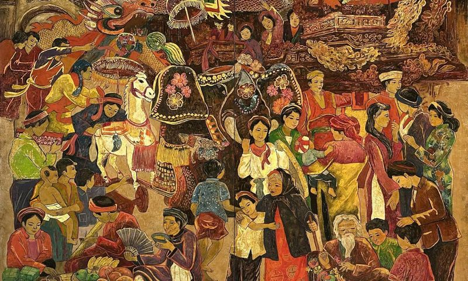
Cảnh hội hè, thiếu nữ trong tranh Trần Nguyên Dũng 🔗 MOI
Bức Lễ hội làng Triều Khúc của họa sĩ Trần Nguyên Dũng được trưng bày tại triển lãm Những ngày thảnh thơi, diễn ra ngày 2-10/6 tại Bảo tàng Mỹ thuật Việt Nam. Bức sơn mài có kích thước lớn 180x300 cm,
Áp lực cơm áo gạo tiền đè bẹp giấc mơ sinh con của nhiều người Nhật 🔗 MOI
Báo cáo dân số mới nhất từ Bộ Y tế, Lao động và Phúc lợi Nhật Bản công bố ngày 3/6 vẽ nên một bức tranh xám về tương lai của đất nước mặt trời mọc khi tổng tỷ suất sinh năm 2025 tiếp tục rơi xuống mức
Lịch âm hôm nay là ngày gì? Dương lịch 8.6 có 2 ngày đặc biệt 🔗 MOI
Dương lịch hôm nay là thứ hai, ngày Đại dương thế giới trùng với ngày Bạn thân, đánh dấu năm 2026 trải qua ngày thứ 157. Theo lịch âm hôm nay 8.6 là ngày 23 tháng 4, theo cách gọi can chi là ngày Quý
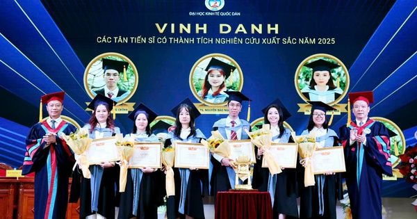
Lấp khoảng trống chất lượng đào tạo tiến sĩ 🔗 MOI
Dự thảo Thông tư về tuyển sinh và đào tạo sau đại học mà Bộ Giáo dục và Đào tạo (GD-ĐT) vừa công bố có nhiều điểm tích cực, nhất là khi khẳng định nguyên tắc tự chủ gắn với trách nhiệm giải trình; đào
Đồng chủ tịch West Ham rời CLB giữa tâm bão tranh cãi 🔗 MOI
Quyết định sai lầm Sau 16 năm đảm nhận vị trí đồng chủ tịch West Ham, David Sullivan đã chính thức từ chức ngay trước khi chương trình BBC Panorama và tờ Times công bố kết quả điều tra về đời tư của ô
Sân khấu kịch TP HCM chinh phục khán giả trẻ 🔗 MOI
Một tín hiệu vui đang xuất hiện ở sân khấu TP HCM: nhiều khán giả đã quay lại rạp để thưởng thức các vở kịch mang màu sắc đương đại. Các câu chuyện trên sân khấu là những đề tài được khán giả trẻ bàn
Người Anh 'quay lưng' với bằng đại học 🔗 MOI
Trung tâm Nghiên cứu Xã hội quốc gia Anh hôm 2/6 công bố kết quả khảo sát Thái độ xã hội (BSA). Theo đó, 1/3 số người được hỏi đồng tình rằng học đại học không còn đáng để đầu tư cả thời gian lẫn tiền

Google Finance tích hợp AI: Người dùng phổ thông cũng có thể đầu tư như chuyên gia 🔗 MOI
Nhà đầu tư nghiệp dư vẫn có thể hiểu thị trường nhờ công cụ AI mới của Google. Google đang thử nghiệm phiên bản Google Finance tích hợp trí tuệ nhân tạo (AI) tại Israel, đánh dấu bước đi mới trong tha
U19 Việt Nam thua sát nút Indonesia, phải chờ vé Bán kết 🔗 MOI
Bàn thắng ở phút bù giờ của Evandra bên phía U19 Indonesia khiến U19 Việt Nam đánh mất cơ hội giành điểm và kết thúc vòng bảng với vị trí nhì bảng A. U19 Việt Nam bước vào lượt trận cuối của vòng bảng

Tham vấn chính sách 🔗 MOI
04/06/2026 (Chinhphu.vn) - Bộ Giáo dục và Đào tạo (GDĐT) đang lấy ý kiến của nhân dân đối với dự thảo Thông tư ban hành Quy chế đào tạo trình độ đại học thay... 02/06/2026 (Chinhphu.vn) - Bộ Giáo dục
Giá bạc hôm nay 8/6/2026 lao dốc, 'bốc hơi' gần 8 triệu đồng/kg chỉ sau một tuần 🔗 MOI
Giá bạc trong nước hôm nay 8/6/2026 Khép lại giao dịch tuần qua, giá bạc miếng loại 1 lượng của Tập đoàn Vàng bạc Đá quý Phú Quý niêm yết ở mức 2,567-2,646 triệu đồng/lượng (mua - bán), giảm 284.000-2
Khơi thông dòng chảy vùng Đông Nam bộ 🔗 MOI
Tuy nhiên, mô hình trên bị vướng mắc do Luật Ngân sách nhà nước hiện hành chỉ quản lý tài chính theo đơn vị hành chính cấp tỉnh, không tồn tại cấp ngân sách vùng. Qua đó, nối dài nghịch lý tỷ trọng đó
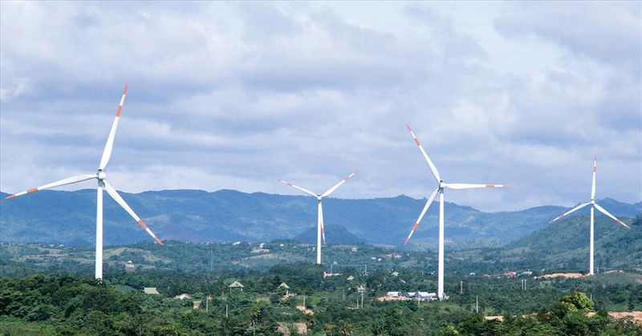
Đại gia hạ tầng nhìn ra cơ hội gì khi bất ngờ đổ tiền vào PC1 sau khi chủ tịch bị bắt? 🔗 MOI
Bắt đáy cổ phiếu PC1 sau biến cố lãnh đạo CTCP Đầu tư Hạ tầng Kỹ thuật TP.HCM (CII) vừa chính thức trở thành cổ đông lớn của CTCP Tập đoàn PC1 sau khi Công ty TNHH Thương mại Đầu tư CII - đơn vị thành
Zverev vô địch Roland Garros 2026 🔗 MOI
Sau ba lần thất bại ở các trận chung kết, Zverev cuối cùng cũng chạm tay vào danh hiệu Grand Slam đầu tiên trong sự nghiệp. Tay vợt Đức vượt qua trận đấu dài năm set căng thẳng trước hiện tượng Italy
Doanh nghiệp sẽ gắn bó chặt chẽ với trường nghề 🔗 MOI
Dự thảo Thông tư này được xây dựng trên cơ sở Luật Giáo dục nghề nghiệp năm 2025, dự kiến thay thế 5 thông tư hiện hành đang điều chỉnh các hoạt động giáo dục nghề nghiệp, gồm: đào tạo trình độ trung
Tránh xe đi sai, đâm vào nhà bên đường, tôi có phải đền? 🔗 MOI
Tôi lái ôtô đúng làn đường, đúng tốc độ theo quy định, bất ngờ có một người điều khiển xe máy lấn làn, lao trực diện về phía xe tôi để vượt xe cùng chiều. Để tránh đâm trực diện vào người này, có thể
Chuyến rời bản gần 1.000 km đi cứu con của ông bố người Mông 🔗 MOI
Sáng đầu tuần, anh Tráng A Phù, 39 tuổi, đi chợ cách Bệnh viện Trung ương Huế vài trăm mét mua rau và thịt. Người đàn ông Mông sau đó về khu bếp ăn miễn phí của bệnh viện để chuẩn bị bữa trưa. Kinh ph

Chủ xe hybrid sạc điện bị chỉ trích 'không sạch' vì lười cắm điện, Toyota cho thấy điều ngược lại 🔗 MOI
Hóa ra chủ xe PHEV không lười cắm sạc, mà phụ thuộc vào việc họ sống ở đâu và sở hữu xe dưới hình thức nào - Ảnh: Toyota Trong nhiều năm qua, xe hybrid sạc điện (PHEV) thường bị hoài nghi về hiệu quả
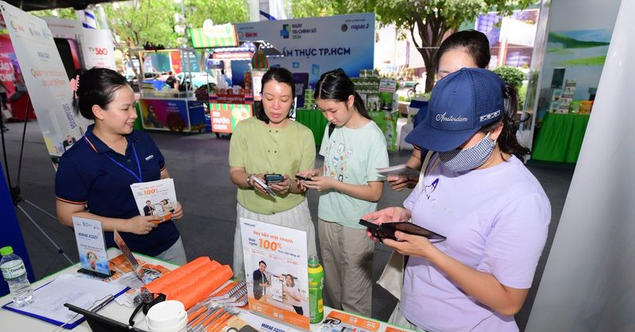
Quản lý tài chính cá nhân trở nên dễ hiểu hơn cùng Mirae Asset 🔗 MOI
Khách hàng tìm hiểu dịch vụ tại gian hàng của Mirae Asset Việt Nam dịp Lễ hội Tài chính số 2026 - Ảnh: QUANG ĐỊNH Tại Lễ hội Tài chính số 2026, Tài chính Mirae Asset Việt Nam mang đến một trải nghiệm

Công cụ AI liên quan Anthropic tự ý xóa sạch dữ liệu của một doanh nghiệp trong 9 giây 🔗 MOI
Hành động phá hoại của công cụ lập trình AI đã khiến khách hàng của Công ty PocketOS rơi vào tình thế khó khăn - Ảnh TED HSU Báo Guardian đưa tin một công cụ lập trình vận hành bằng trí tuệ nhân tạo (
Năng lượng & Khoáng sản 🔗 MOI
Trong số 96 dự án thu hút đầu tư năm 2026, có 21 dự án thuộc lĩnh vực năng lượng, 20 dự án về nhà ở, khu công nghiệp, 15 dự án hạ tầng khu, cụm công nghiệp...
Chân dung doanh nghiệp 🔗 MOI
Không chỉ đánh dấu sự xuất hiện của ông Trịnh Văn Quyết, ĐHĐCĐ của FLC còn gây chú ý với kế hoạch đưa cổ phiếu trở lại giao dịch, tái cấu trúc.
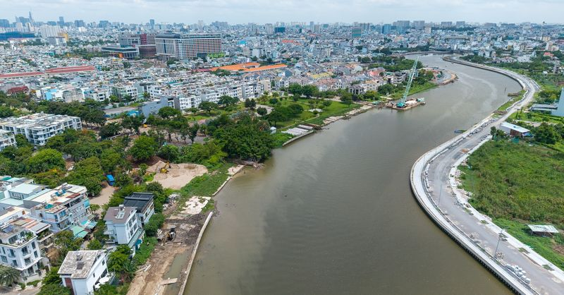
Cận cảnh khu vực dự kiến xây cầu Vàm Thuật gần 1.200 tỷ đồng 🔗 MOI
TPHCM dự kiến khởi công cầu Vàm Thuật vào quý 4/2027 nhằm kết nối phường An Phú Đông với khu vực trung tâm thành phố. Dự án được kỳ vọng sẽ tạo thuận lợi cho việc đi lại, góp phần tháo gỡ những khó kh
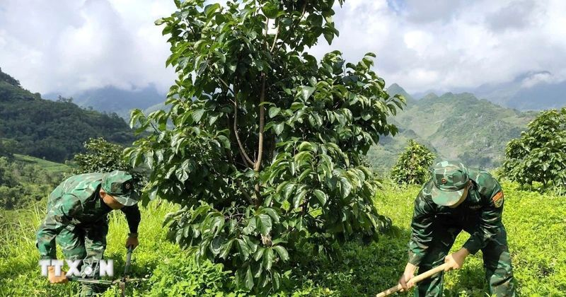
Bộ đội Biên phòng đồng hành xây dựng nông thôn mới vùng biên 🔗 MOI
Facebook Twitter Lưu bài viết Bản in Copy link Giữa những ngày đầu tháng 6/2026, trên các bản làng vùng biên của tỉnh Tuyên Quang, hình ảnh cán bộ, chiến sỹ biên phòng cùng người dân gùi cát, sỏi, xi
10 mẫu xe SUV và bán tải có khả năng vượt địa hình khắc nghiệt nổi bật nhất 🔗 MOI
Trong bối cảnh SUV tiếp tục thống trị thị trường ô tô toàn cầu, không phải mẫu xe gầm cao nào cũng thực sự phù hợp với những cung đường khắc nghiệt. Nhiều mẫu SUV hiện đại được thiết kế thiên về sự ti
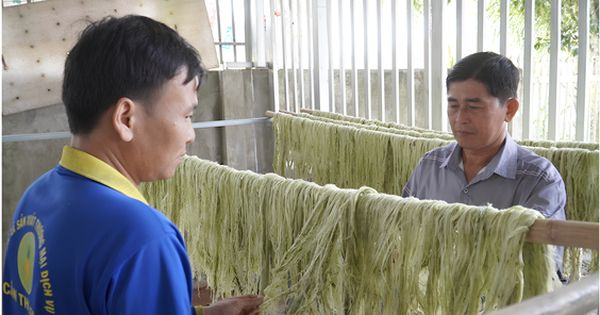
ĐBSCL tăng tốc chuyển đổi xanh 🔗 MOI
Một trong những mô hình chuyển đổi xanh, phát triển kinh tế tuần hoàn tiêu biểu tại ĐBSCL là việc tận dụng lá khóm để ép sợi ở xã Hỏa Lựu, TP Cần Thơ. Lợi ích kép thiết thực Ông Phạm Văn Nương, người
Christian Eriksen lại đột quỵ trên sân bóng 🔗 MOI
Xem clip khoảnh khắc sự cố của Eriksen Ngôi sao 34 tuổi cảm thấy khó chịu và có hành động đặt tay lên ngực trước khi ngã xuống sân phút 65, khiến các máy quay truyền hình lập tức chuyển hướng khác. Độ
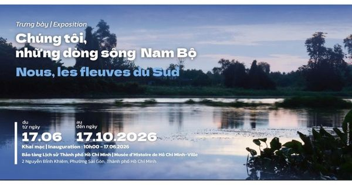
Trưng bày về những dòng sông Nam Bộ 🔗 MOI
Trong khuôn khổ dự án "Sống cùng dòng sông" do Đại sứ quán Pháp tại Việt Nam và Viện Pháp tại Việt Nam khởi xướng, trưng bày "Chúng tôi, những dòng sông Nam Bộ" mang đến nhiều góc nhìn về mối quan hệ
Muối thừa 'ẩn' trong thực phẩm chế biến sẵn gây hại sức khỏe 🔗 MOI
TS Lê Thị Hương Giang, Trưởng khoa Dinh dưỡng, Bệnh viện 19-8, cho biết lượng muối dư thừa không chỉ đến từ muối nấu ăn trực tiếp, mà còn ẩn trong nước mắm, xì dầu, bột nêm, thực phẩm chế biến sẵn như
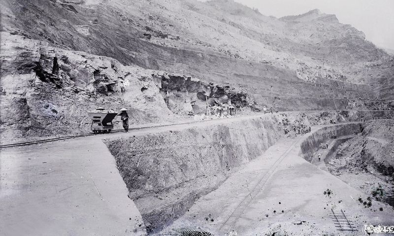
Quảng Ninh nghìn năm thăng trầm 🔗 MOI
Những di chỉ khảo cổ thuộc văn hóa Soi Nhụ, Cái Bèo và Hạ Long cho thấy con người đã sinh sống tại đây khoảng 18.000 năm trước. Cư dân cổ Quảng Ninh sống bằng đánh bắt hải sản, khai thác nguồn lợi ven
5 đồ uống mùa hè tốt cho thận 🔗 MOI
Các chuyên gia lưu ý rằng không có loại đồ uống nào có thể thay thế vai trò của nước lọc hoặc điều trị bệnh thận. Để duy trì chức năng thận khỏe mạnh, bên cạnh việc uống đủ nước, mỗi người cần kiểm so
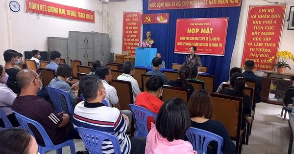
Đảng viên tích cực tham gia phong trào ở khu dân cư 🔗 MOI
Quy định 213-QĐ/TW ngày 2-1-2020 của Bộ Chính trị - về trách nhiệm của đảng viên đang công tác thường xuyên giữ mối liên hệ với tổ chức Đảng và nhân dân nơi cư trú - là một văn bản quan trọng, góp phầ
Cầu thủ nào sẽ trở thành ngôi sao sáng nhất? 🔗 MOI
Sau thời kỳ của "Cậu bé vàng" Maradona , bóng đá thế giới gần như không còn thấy xuất hiện những cầu thủ có thể ảnh hưởng lớn đến thành tích của đội tuyển quốc gia tại một kỳ World Cup. Có thể đâu đó
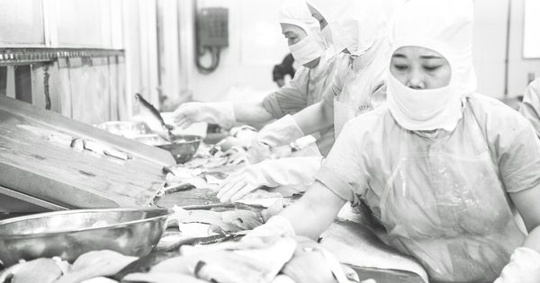
Báo in ngày 8-6: Tổ chức kỳ thi tốt nghiệp THPT an toàn, nghiêm túc 🔗 MOI
Báo Người Lao Động số ra ngày 8-6-2026. Mời bạn đọc đăng ký gói đọc Báo Người Lao Động E-Paper tại đây . + Xuất khẩu tiếp tục bứt phá (trang 3) Chính phủ đặt mục tiêu năm 2026, kim ngạch xuất khẩu tăn

Coi chừng nhiễm liên cầu lợn vì thói quen ăn tiết canh, thịt tái 🔗 MOI

Làm thế nào để lên thực đơn dinh dưỡng cho gia đình nhiều thế hệ? 🔗 MOI

Khám tiền hôn nhân ở nam và nữ khác nhau như thế nào? 🔗 MOI

Sử dụng thuốc tăng cường sinh lý để kéo dài 'cuộc yêu', có nên không? 🔗 MOI

Chồng không tinh trùng nhưng vợ vẫn sinh được con 'chính chủ', vì sao? 🔗 MOI

Viêm da tiết bã ở trẻ em khác gì ở người lớn? 🔗 MOI

Xóa xăm có xóa được triệt để hay không? 🔗 MOI

6 dấu hiệu thầm lặng cảnh báo đột quỵ trước 1 tháng 🔗 MOI
Theo The Times of India, 6 dấu hiệu của cơ thể cảnh báo trước 1 tháng khi đột quỵ sắp xảy ra: 1. Chóng mặt bất thường Cảm giác chóng mặt thường được cho là do bỏ bữa, mất nước hoặc đứng dậy quá nhanh.
Video hàng trăm vận động viên tham gia giải bơi vượt biển Lý Sơn 🔗 MOI
🔗 MOI
Từ một cầu thủ bị xem là "người thừa" ở Man Utd, Scott McTominay đã trở thành biểu tượng mới của bóng đá Scotland đến mức được đưa lên tờ tiền lưu niệm 20 bảng trước World Cup 2026. Hình ảnh cú ngả bà
Bản tin 30s nóng: Nuôi tóc tặng người bệnh ung thư; Hải sâm phủ hồng bờ biển 🔗 MOI
Bản tin 30s nóng: Nuôi tóc tặng người bệnh ung thư; Hải sâm phủ hồng bờ biển Bản tin 30s nóng 7-6: Nuôi tóc tặng người bệnh ung thư; Hải sâm phủ hồng bờ biển tại Thái Lan; Sóc T
Video xe tải cố vượt đường ngang khi cần chắn đã hạ, bị tàu SE19 húc văng 🔗 MOI
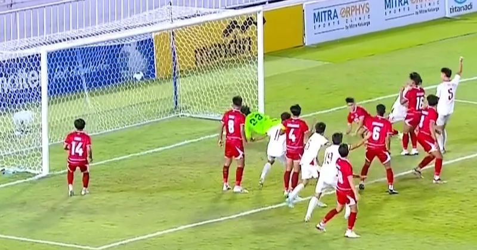
Xem lại tình huống dẫn tới phạt đền ở phút 90+2 trận U19 Việt Nam gặp U19 Indonesia 🔗 MOI

Hệ thống Bảo hiểm xã hội Việt Nam: Tăng tốc thực hiện các chỉ tiêu nhiệm vụ năm 2025 🔗 MOI
Theo Bảo hiểm xã hội (BHXH) TP. Hồ Chí Minh, mặc dù năm 2025 gặp một số khó khăn, tuy nhiên tập thể cán bộ viên chức, người lao động BHXH TP. Hồ Chí Minh quyết tâm hoàn thành vượt chỉ tiêu giao, với s
Lê Quang Liêm tỏa sáng, giành vé dự giải 16 tỉ đồng 🔗 MOI
Lê Quang Liêm đánh bại Đại kiện tướng đến từ Indonesia để giành vé tham dự Esports Nations Cup 2026 - Ảnh: FBNV Vào lúc 17h hôm nay (7-6), Đại kiện tướng số 1 Việt Nam Lê Quang Liêm bước vào trận đấu
Xếp hàng mua nước 1.000 đồng, người trẻ còn trải nghiệm mô phỏng du lịch nước ngoài với TPBank 🔗 MOI
Khách tham quan được hướng dẫn trải nghiệm gian hàng của TPBank - Ảnh: VĂN TRUNG Ngay từ khu vực bên ngoài gian hàng của TPBank, khách tham quan có thể bắt gặp hình ảnh xe tuk-tuk, các công trình biểu
Giành á quân V-League, Thể Công - Viettel ẵm vé dự cúp C2 châu Á 2026 - 2027 🔗 MOI
Thể Công - Viettel ăn mừng bàn thắng quý giá trước Công An Hà Nội - Ảnh: TCVT Ở vòng 26 LPBank V-League 2025 - 2026, Thể Công - Viettel đấu với Công An Hà Nội trên sân trung lập là Thiên Trường (Ninh
Fan chi 10 triệu tệ để Kiều Sở phá mốc 10.000 điểm nhiệt 🔗 MOI
Kiều Sở chính thức gia nhập nhóm phim đạt nhiệt độ 10.000 trên Youku trong năm 2026 - Ảnh: Youku Theo Sina , phim cổ trang Kiều Sở chính thức vượt mốc nhiệt độ 10.000 trên nền tảng Youku vào tối 7-6.
Xác định các nhà vô địch giải đấu mệnh danh 'World Cup billiards Việt Nam' 🔗 MOI
Nguyễn Chí Long (giữa) với chức vô địch nội dung carom 3 băng nam - Ảnh: ĐỨC PHONG Tâm điểm của Giải billiards HBSF Tour 1 là nội dung carom 3 băng nam với màn so tài giữa cơ thủ Nguyễn Nhất Hòa và Ng
HLV Hứa Hiền Vinh: Tôi không cần thanh minh khi rớt hạng 🔗 MOI
HLV Hứa Hiền Vinh an ủi đội trưởng Ngô Tùng Quốc sau khi CLB rớt hạng - Ảnh: ANH KHOA Dù thắng ở lượt trận cuối, Becamex TP.HCM không thể trụ hạng dù có cùng 24 điểm như Đà Nẵng hay PVF-CAND. HLV Hứa
Đỗ Phú Quí, Hải Nam khiến khán giả bùng nổ ở bế mạc Lễ hội Tài chính số 2026 🔗 MOI
Đỗ Phú Quí cùng vũ đoàn mở màn với Đố em bắt được anh - Ảnh: QUANG ĐỊNH Nhiều fan hâm mộ của Đỗ Phú Quí, Hải Nam đã có mặt từ sớm ở đường đi bộ Nguyễn Huệ (TP.HCM), chọn vị trí đẹp theo dõi phần biểu
Pha đá phạt ghi bàn của U19 Việt Nam vào lưới U19 Indonesia 🔗 MOI
Đội trưởng Quốc Khánh bật cao đánh đầu uy lực để gỡ hòa 1-1 cho U19 Việt Nam - Nguồn: TV360 Tối 7-6, U19 Việt Nam đối đầu với U19 Indonesia ở lượt trận cuối bảng A - Giải vô địch U19 Đông Nam Á 2026.
U19 Việt Nam sẽ bị loại nếu Thái Lan - Malaysia 'bắt tay nhau' 🔗 MOI
U19 Malaysia sẽ vượt mặt Việt Nam nếu hòa Thái Lan - Ảnh: AFF Tối ngày 7-6, U19 Việt Nam đã thất bại 1-2 trước U19 Indonesia ở lượt trận cuối cùng bảng A, Giải U19 Đông Nam Á 2026. Trận thua này đẩy U
Dự đoán tỉ số: U19 Thái Lan thắng Malaysia, giúp Việt Nam đi tiếp 🔗 MOI
U19 Thái Lan (áo trắng) có phong độ cao - Ảnh: FAT Đây là trận đấu mang ý nghĩa quyết định với cơ hội đi tiếp của U19 Việt Nam, sau khi thầy trò ông Yutaka Ikeuchi thua U19 Indonesia tối ngày 7-6. Kết
Xem lại quả phạt đền tranh cãi của U19 Việt Nam trước U19 Indonesia 🔗 MOI
Quả phạt đền tranh cãi ở phút 90 trong trận U19 Việt Nam đấu U19 Indoneisa - Nguồn: TV360 Tối 7-6, U19 Việt Nam đã chịu thất bại 1-2 trước U19 Indonesia ở lượt trận cuối bảng A Giải vô địch U19 Đông N
Hải trình tháng 6 mùa thi của những 'thuyền trưởng' tuổi 18: Đi qua nỗi sợ 🔗 MOI
Nữ sinh Sùng Thị Dê cùng các bạn học ôn thi chạy nước rút tại khu bán trú Trường THPT Mù Cang Chải - Ảnh: PHÚC TÀI Tâm tư người 'thuyền trưởng' trước kỳ thi tốt nghiệp THPT Có một kiểu sợ thật lạ: sợ

Nhật Bản ra mắt 'máy giặt người' trị giá 385.000 USD, làm sạch từ đầu đến chân trong 15 phút 🔗 MOI
Thống đốc Yoshimura Yoshifumi của tỉnh Osaka trải nghiệm máy giặt người Mirai - Ảnh: SISA COMMUNICATION YOUTUBE Theo trang Interesting Engineer ngày 30-11, Công ty Science Inc. của Nhật Bản vừa chính

Hoàn thiện khung khổ pháp lý về tiết kiệm 🔗 MOI
Pháp luật Trong công cuộc phòng, chống lãng phí hiện nay khó có thể tránh khỏi những khó khăn, nguy hiểm, ảnh hưởng tới người đấu tranh chống lãng phí. Do đó, việc bảo vệ người cung cấp thông tin phát

Cải cách tài chính công thúc đẩy tăng trưởng 🔗 MOI
Pháp luật Trong những năm qua, cùng với việc đẩy mạnh tiến trình xây dựng Nhà nước pháp quyền Việt Nam xã hội chủ nghĩa, công tác xây dựng và hoàn thiện hệ thống pháp luật đã đạt được nhiều thành tựu
bảng giá truyền thông 🔗 MOI

Thông cáo báo chí 🔗 MOI
Thông cáo báo chí 05/06/2026 (Chinhphu.vn) - Văn phòng Chính phủ vừa có Thông cáo báo chí chỉ đạo, điều hành của Chính phủ, Thủ tướng Chính phủ ngày 5/6/2026. 04/06/2026 (Chinhphu.vn) - Văn phòng Chín

Chỉ đạo, quyết định của Chính phủ - Thủ tướng Chính phủ 🔗 MOI
07/06/2026 (Chinhphu.vn) - Chính phủ vừa ban hành Nghị quyết số 148/NQ-CP phiên họp Chính phủ thường kỳ tháng 5/2026. 06/06/2026 (Chinhphu.vn) - Chính phủ ban hành Nghị định số 199/2026/NĐ-CP ngày 05/
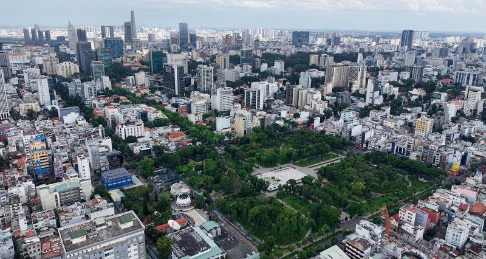
🔗 MOI
Theo đó, công viên Lê Văn Tám (phường Tân Định) tiền thân là nghĩa trang Mạc Đĩnh Chi. Ban đầu, đây là nơi an táng binh lính, sĩ quan Pháp thời thuộc địa, về sau là nơi chôn cất nhiều chính khách, tướ
Cơn đau đầu của ông Tuchel ở đội tuyển Anh 🔗 MOI
Trong danh sách đội tuyển Anh dự World Cup 2026, nhiều cầu thủ chưa thực sự biết mình sẽ về đâu sau mùa hè này. Marcus Rashford vẫn là một trong những cái tên được nhắc đến trên thị trường chuyển nhượ
Nhận định bảng I World Cup 2026: 'Gà trống' có cất cao tiếng gáy? 🔗 MOI
Thông tin bảng I World Cup 2026 Hạng mục Nội dung Các đội Pháp, Na Uy, Senegal, Iraq Đội được đánh giá cao nhất Pháp Ẩn số đáng chú ý Na Uy Trận đáng xem nhất Pháp - Na Uy Ngôi sao nổi bật Kylian Mbap
TP.HCM dốc sức tìm mộ tập thể liệt sĩ hy sinh năm 1968 🔗 MOI
Lời kể của nhân chứng Ông Nguyễn Thành Phước (70 tuổi, đang sống tại xã Xuân Thới Sơn, TP.HCM), sinh ra và lớn lên tại khu Bắc Hải, cạnh nghĩa trang đô thành Chí Hòa (nay là công viên Lê Thị Riêng, P.
'Ma xó' 3 ngày bỏ túi 55 tỷ, phim có Quốc Trường đóng lại báo động đỏ 🔗 MOI
Với doanh thu vượt 20 tỷ ngay sau ngày đầu tiên khởi chiếu (bao gồm suất chiếu sớm và ngày đầu khởi chiếu, theo Box Office Vietnam, Ma xó trở thành bộ phim có doanh thu mở màn phim Việt tháng 6 cao nh
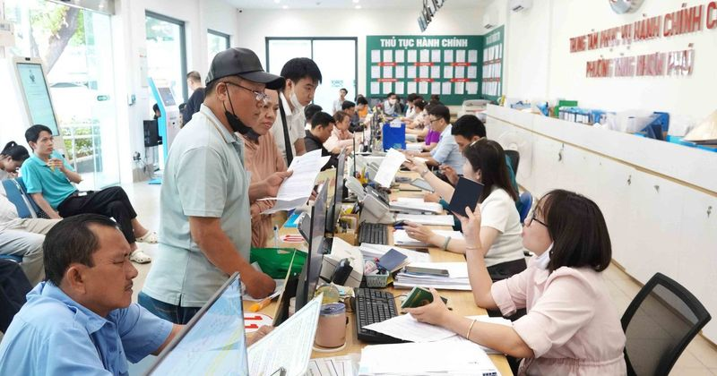
TP.HCM thí điểm công chức làm việc tại nhà: Đánh giá công chức theo KPI 🔗 MOI
Thí điểm từ tháng 7.2026 Tại hội nghị mới đây, Ủy viên Bộ Chính trị , Bí thư Thành ủy TP.HCM Trần Lưu Quang yêu cầu cuối tháng 6.2026 phải ban hành bộ chỉ số hiệu quả công việc (KPI) để đánh giá cán b
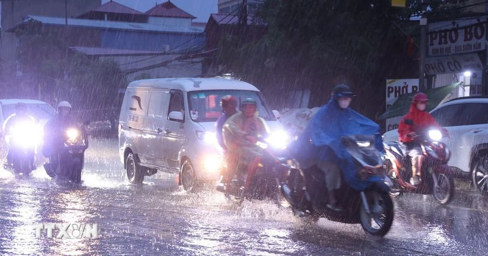
Thời tiết ngày 8/6: Ảnh hưởng không khí lạnh, Bắc Bộ, Bắc Trung Bộ có mưa to 🔗 MOI
Facebook Twitter Lưu bài viết Bản in Copy link Theo Trung tâm Dự báo Khí tượng Thủy văn Quốc gia, hiện bộ phận không khí lạnh vẫn đang tiếp tục nén và đẩy rãnh áp thấp có trục ở khoảng 24-26 độ vĩ Bắc
Quán bánh cuốn 53 năm, 'khách Tây đông hơn khách ta' được Michelin khen ngợi 🔗 MOI
Quán bánh cuốn gia truyền 4 đời 12h trưa, quán bánh cuốn nằm trên phố Hàng Gà, phường Hoàn Kiếm, Hà Nội đông kín thực khách. Bà Trần Thị Vân (69 tuổi), chủ quán thoăn thoắt tráng bánh trên 2 chiếc nồi
Tân binh Man Utd được Brazil gọi bổ sung dự World Cup 2026 🔗 MOI
Wesley, người được kỳ vọng sẽ là hậu vệ phải đá chính trong đội hình của HLV Carlo Ancelotti, bị chấn thương cơ đùi trái và không thể tham dự World Cup 2026. Liên đoàn Bóng đá Brazil (CBF) thông báo E
Tân binh của MU được gọi gấp lên tuyển Brazil dự World Cup 2026 🔗 MOI
Ederson sẽ là bản hợp đồng đầu tiên của MU hè này, sau khi Quỷ đỏ đồng ý trả 39 triệu bảng cho Atalanta (bao gồm cả phụ phí). Chàng tiền vệ 26 tuổi chuẩn bị đặt bút ký hợp đồng có thời hạn 4 năm với đ
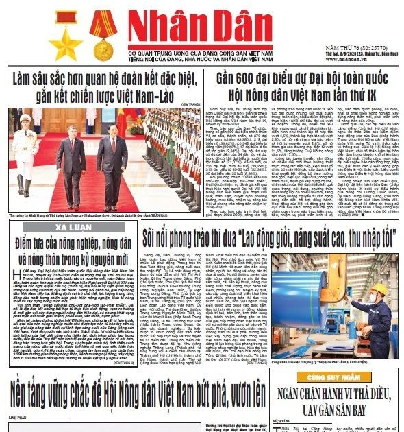
Báo Nhân Dân số 25770 🔗 MOI
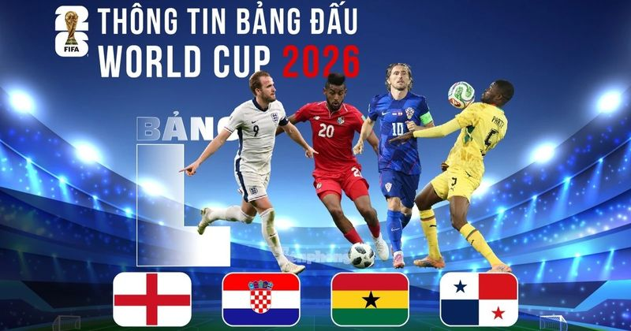
Thông tin bảng L FIFA World Cup 2026: Ghana, Panama sẵn sàng khuấy đảo cục diện bảng L 🔗 MOI
Loại lá trị mẩn ngứa, rôm sảy mùa hè 🔗 MOI
Tiến sĩ Ngô Đức Phương, Viện trưởng Viện Khoa học thuốc nam, cho hay, kim ngân hoa (tên khoa học là Lonicera japonica) là cây dây leo rất quen thuộc, vừa được trồng làm cảnh vừa được dùng làm thuốc. T
Nữ nhiếp ảnh gia Việt ghi lại cảnh hàng ngàn chim hồng hạc nhuộm hồng biển châu Phi 🔗 MOI
Nữ nhiếp ảnh gia Nguyễn Thị Thanh Hải cho biết những bức ảnh về đàn chim hồng hạc tuyệt đẹp được chụp tại vịnh Walvis, một trong những vịnh đẹp của Cộng hòa Namibia ( châu Phi ). Khi đến đây chị cảm t
Đang chuẩn bị cập bến MU, tiền vệ người Brazil bất ngờ được triệu tập dự World Cup 🔗 MOI
Ederson đang trên đường cập bến MU (ảnh minh hoạ) HLV Carlo Ancelotti đã hoàn thiện danh sách 26 tuyển thủ Brazil từ lâu nhưng mới đây, hậu vệ Wesley (thuộc biên chế AS Roma) không may gặp chấn thương
[Video] Dự báo thời tiết ngày 8/6/2026: Bắc Bộ về đêm có mưa dông diện rộng, Trung Bộ duy trì nắng gắt 🔗 MOI
Trong ngày hôm nay, tại khu vực Bắc Bộ trời giảm mây, nắng xuất hiện trở lại trên diện rộng. Nắng nóng vẫn còn duy trì tại khu vực trung du và đồng bằng, tuy nhiên phạm vi đã thu hẹp hơn so với những
Dựng xây phường hạnh phúc 🔗 MOI
Đo bằng cảm nhận của người dân Một sáng cuối tuần đầu tháng 6, sau cơn mưa đêm, không khí ở khu phố 8, phường Thủ Đức trở nên dịu mát hơn thường lệ. Ông Nguyễn Huy Tửu, Bí thư Chi bộ khu phố 8, tranh
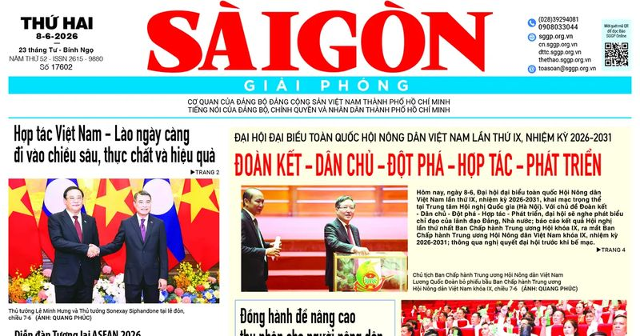
Báo Sài Gòn Giải Phóng ngày 8/6/2026 🔗 MOI
Tin tức đặc biệt trên báo in Thanh Niên 8.6.2026 🔗 MOI
Thi tốt nghiệp THPT 2026: 'Siết' ra đề, coi thi, chấm thi Sau thời gian miệt mài học tập và những lễ hội chia tay năm cuối cấp, học sinh lớp 12 chuẩn bị bước vào kỳ thi tốt nghiệp THPT năm 2026 ẢNH: N
Thi tốt nghiệp THPT 2026: 'Siết' ra đề, coi thi, chấm thi 🔗 MOI
Đồng thời, ông Huỳnh Văn Chương (ảnh) cũng nêu yêu cầu quyết liệt từ Bộ GD-ĐT trong tất cả các khâu: ra đề, coi thi, chấm thi. GS-TS Huỳnh Văn Chương, Cục trưởng Cục Quản lý chất lượng (Bộ GD-ĐT) ẢNH:
Báo Pháp Luật TP. Hồ Chí Minh 🔗 MOI
VIDEO: Iran tấn công tên lửa vào Israel 🔗 MOI
(PLO)- Iran phóng một loạt tên lửa vào Israel nhằm đáp trả chiến dịch quân sự của Israel tại Lebanon. Iran ngày 7-6 đã phóng một loạt tên lửa vào Israel nhằm đáp trả chiến dịch quân sự của Israel tại
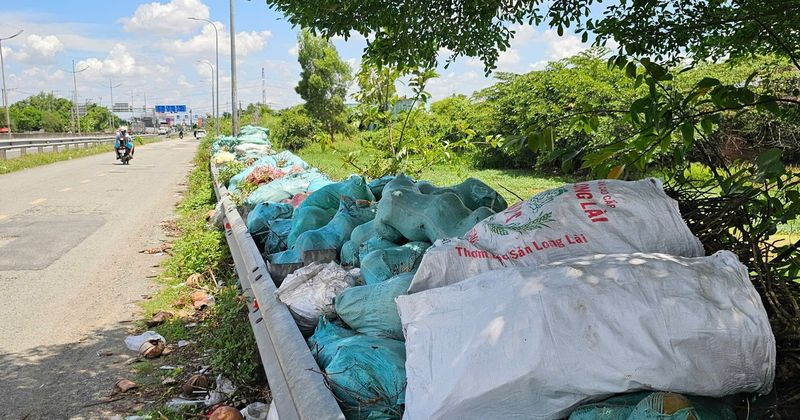
3 ngày thu gom hơn 60 tấn rác ở TP.HCM: Vỏ dừa chất đống dài cả trăm mét 🔗 MOI
Mở đầu chiến dịch, các lực lượng chức năng ở TP.HCM đã tập trung xử lý dứt điểm tình trạng vứt rác thải bừa bãi gây ô nhiễm nghiêm trọng tại các tuyến đường, kênh rạch trọng điểm. Trong 3 ngày ra quân
Bác sĩ và nghìn lẻ tình huống khó nói: 'Chúng tôi đã cố hết sức' 🔗 MOI
LỜI TÒA SOẠN Trong bệnh viện, có những cuộc trò chuyện ngắn ngủi nhưng nặng nề không kém một ca phẫu thuật kéo dài nhiều giờ, đó là khi bác sĩ phải nói với gia đình bệnh nhân rằng người thân của họ có
🔗 MOI
GS Huỳnh Văn Chương, Cục trưởng Cục Quản lý chất lượng (Bộ GD-ĐT) cho biết, đề thi tốt nghiệp THPT năm 2026 được xây dựng đúng theo những phương pháp khảo thí và bám sát Chương trình giáo dục phổ thôn
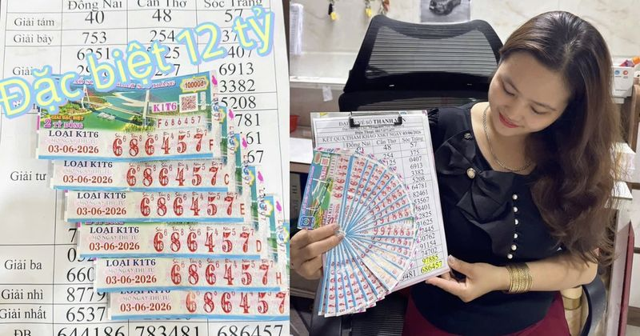
Một gia đình có 3 người trúng 12 tỉ xổ số miền Nam, nhận toàn bộ tiền mặt 🔗 MOI
Câu chuyện được đại lý vé số Thanh Vân ở xã Tập Sơn, Vĩnh Long chia sẻ sau khi đã đổi thưởng 6 tờ vé số trúng số độc đắc 12 tỉ đồng xổ số miền Nam cho 3 người trong cùng một gia đình tại địa phương. Đ
Đoàn kết - Dân chủ - Đột phá - Hợp tác - Phát triển 🔗 MOI
Ngày 7-6, tại Trung tâm Hội nghị quốc gia (Hà Nội), đã diễn ra ngày làm việc thứ nhất Đại hội lần thứ IX Hội Nông dân Việt Nam, nhiệm kỳ 2026-2031, với sự tham dự của gần 600 đại biểu. Đại hội đã bầu
Đỡ lo... 🔗 MOI
- Làm gắt vậy tụi nhỏ hay giám thị coi thi đều an tâm, khỏi lo ba cái sự cố ngộ độc bất thình lình. - Nhà tui ở ngay sát vách hội đồng thi cũng được hưởng ké. Nghĩ bụng, ước gì ngày thường cũng siết c
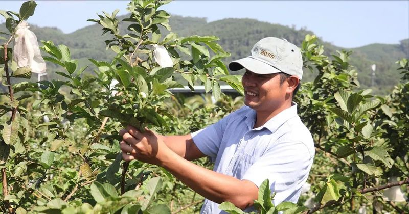
Đồng hành để nâng cao thu nhập cho người nông dân 🔗 MOI
* PHÓNG VIÊN: Trung ương Hội Nông dân Việt Nam nhiều lần nhấn mạnh yêu cầu đổi mới phương thức hoạt động của hội. Xin bà cho biết, thay đổi lớn nhất sắp tới sẽ là gì? * Bà BÙI THỊ THƠM: Trước đây, chú
Dự báo thời tiết 8/6/2026: Miền Bắc nắng oi, chiều tối không khí lạnh về gây mưa lớn 🔗 MOI
Theo Trung tâm Dự báo khí tượng thủy văn quốc gia, ngày 8/6, trước khi không khí lạnh tràn về gây mưa lớn từ chiều tối, ban ngày khu vực đồng bằng Bắc Bộ và phía Nam Phú Thọ vẫn có nắng nóng, có nơi n

Tử vi ngày 8 tháng 6: Con giáp nào may mắn hôm nay? 🔗 MOI
Tuổi Tí trong tử vi ngày 8 tháng 6 có thể nhận ra một việc mình theo đuổi thời gian qua đang cần thay đổi phương pháp. Khi dám thử cách mới, bạn sẽ thấy kết quả khả quan hơn. Tài lộc có tín hiệu tích
U19 Việt Nam thua Indonesia: Một bài học đắt giá 🔗 MOI
Khi lợi thế là áp lực U19 Việt Nam bước vào trận đấu cuối cùng bảng A với rất nhiều lợi thế. Hiệu số tốt hơn, vị trí đầu bảng và chỉ cần một trận hòa là đủ hoàn thành mục tiêu giành vé vào bán kết. Tr
Quốc gia nào nhỏ nhất thế giới, đi bộ chưa đầy 1 giờ là hết? 🔗 MOI
1. Quốc gia nào được công nhận là nhỏ nhất thế giới về cả diện tích lẫn dân số? Nauru 0% Monaco 0% Tuvalu 0% Thành Vatican 0% Chính xác Thành Vatican là quốc gia có diện tích "khiêm tốn" nhất hành tin
Bồ Đào Nha có mạnh hơn nếu thiếu Ronaldo? 🔗 MOI
Bồ Đào Nha có "mạnh hơn" nếu không có Ronaldo Trong suốt hơn 2 thập kỷ, Cristiano Ronaldo là người đã định hình lại cách nhìn của toàn thế giới về đội tuyển Bồ Đào Nha từng bị xem là "cửa dưới" ở các
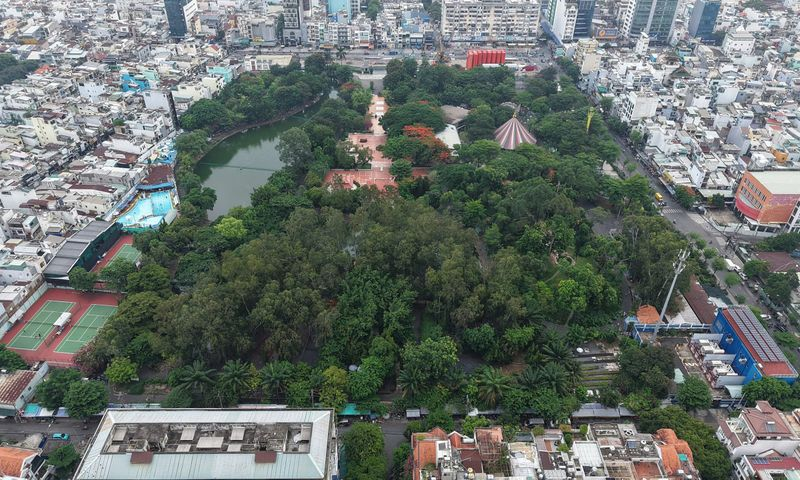
Công viên Lê Thị Riêng - nơi tìm mộ chiến sĩ hy sinh 58 năm trước 🔗 MOI
Công viên Lê Thị Riêng có hình thang với cổng chính nằm ở đường Cách Mạng Tháng 8, ba mặt còn lại giáp với đường Bắc Hải, Trường Sơn, phường Hòa Hưng. Công viên được xây dựng trên nền đất nghĩa trang
U19 Việt Nam thua đau Indonesia phút bù giờ, thấp thỏm chờ vé bán kết 🔗 MOI
Thua 1-2 trước U19 Indonesia từ bàn phạt đền phút 90+2 ở lượt cuối bảng A, U19 Việt Nam đánh mất ngôi đầu và phải chờ kết quả các bảng còn lại để nuôi hy vọng vào bán kết Giải U19 Đông Nam Á 2026 Kết
Theo dấu chân voi: Voi nhà 'thoát kiếp' tập làm voi rừng 🔗 MOI
Những ngày đầu tiên được tháo bỏ sợi xích sắt từng gắn chặt vào chân suốt hàng chục năm, nhiều cá thể voi nhà ở Vườn quốc gia Yók Đôn không hề tỏ ra thích thú với tự do như người ta vẫn nghĩ. Giữa khô
Tây Ninh khởi động dự án giao thông hơn 9.300 tỉ đồng 🔗 MOI
Ông Nguyễn Thanh Đông - Bí thư Đảng ủy phường Kiến Tường, tỉnh Tây Ninh - cho biết địa phương đang khẩn trương hoàn tất các bước thu hồi đất, chi trả tiền bồi thường, hỗ trợ và giải phóng mặt bằng nhằ
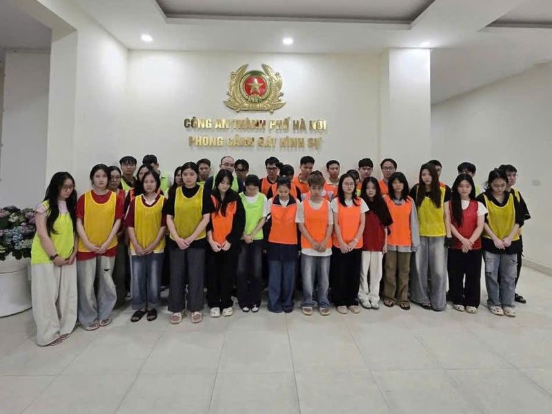
Khởi tố, bắt tạm giam hàng loạt lãnh đạo, giám đốc doanh nghiệp, trẻ nhất SN 2001 🔗 MOI
TIN MỚI Bắt Giám đốc và 17 nhân viên công ty đẩy website cờ bạc lên top tìm kiếm Cơ quan CSĐT Công an TP Hà Nội đã khởi tố vụ án "Đưa trái phép thông tin mạng máy tính, mạng viễn thông", đồng thời, kh
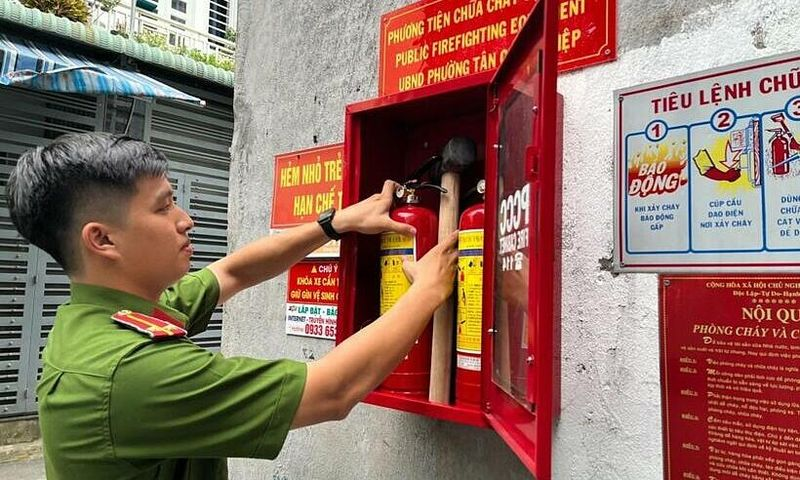
Đề xuất bỏ kiểm tra nghiệm thu phòng cháy chữa cháy với công trình, phương tiện 🔗 MOI
Bộ Công an đang xây dựng Luật sửa đổi, bổ sung một số điều của Luật Quản lý, sử dụng vũ khí, vật liệu nổ và công cụ hỗ trợ; Luật Phòng cháy, chữa cháy và cứu nạn, cứu hộ. Trong số các đề xuất có việc

Google ra mắt Gemma 4, AI chạy offline trên thiết bị cá nhân 🔗 MOI
Gemma 4 chạy trực tiếp trên thiết bị cá nhân - Ảnh: THOMAS FULLER Trong bối cảnh trí tuệ nhân tạo vẫn phụ thuộc vào hạ tầng đám mây, việc một mô hình có thể hoạt động trực tiếp trên thiết bị cá nhân đ

Google 'lột xác' với kính AI và Gemini 3.5 🔗 MOI
CEO Google Sundar Pichai phát biểu về phiên bản Gemini Spark tại sự kiện Google I/O ở bang California, ngày 19-5 - Ảnh: AP Tại hội nghị Google I/O 2026 diễn ra ngày 19-5 ở bang California (Mỹ), Google
cổ phiếu AAN 🔗 MOI
Chỉ sau một tuần giao dịch trên HoSE, cổ phiếu AAN đã tăng hơn 56%. Doanh nghiệp cho biết diễn biến này đến từ cung cầu thị trường và không có tác động chủ quan từ công ty..
Nghiên cứu mới phát hiện omega-3 có thể giảm một nửa nguy cơ ung thư tụy 🔗 MOI
Nghiên cứu mới được công bố trên tạp chí của Hiệp hội Nghiên cứu Ung thư Mỹ - Cancer Discovery - đã chỉ chính xác axit béo nào có khả năng chống ung thư mạnh mẽ, và chất béo nào có thể gây phản tác dụ
4 tác động giúp giảm cân của sữa đậu nành 🔗 MOI
Một số nghiên cứu cho thấy sữa đậu nành và các sản phẩm làm từ đậu nành có khả năng hỗ trợ giảm cân , cải thiện tỷ lệ mỡ và cơ trong cơ thể. Những lợi ích này có được là nhờ những tác động sau. Sữa đậ
Lệnh cấm làm chao đảo giới giải trí 🔗 MOI
Theo Sina , mới đây có thông tin nền tảng sản xuất và phát sóng phim ngắn lớn nhất Trung Quốc là Hồng Quả (Hongguo Short Drama) sẽ ra lệnh cấm 3 đề tài và hạn chế 13 nhóm nội dung, một kế hoạch nhằm c
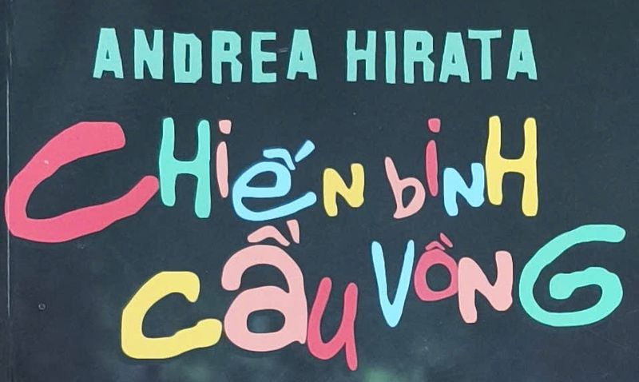
'Chiến binh cầu vồng' - mọi trẻ em đều cần được đến trường 🔗 MOI
Chiến binh cầu vồng là tác phẩm văn học của nhà văn Indonesia Andrea Hirata. Câu chuyện giúp người đọc hiểu thêm về cuộc sống của những trẻ em trên một hòn đảo ở Indonesia, giá trị của giáo dục, học v
Liên hoan Phim ngắn TP HCM năm 2026: Trình chiếu 46 tác phẩm vào vòng chung khảo 🔗 MOI
Năm nay, hơn 100 tác phẩm được gửi đến tham gia tranh giải, trong đó 46 tác phẩm được chọn vào vòng chung khảo. Hội đồng Giám khảo vòng chung khảo Liên hoan Phim ngắn TP HCM lần 2 - năm 2026. Ảnh: VĂN
Clip: U19 Việt Nam thua đau phút bù giờ trên chấm 11 m 🔗 MOI
U19 Indonesia đánh bại U19 Việt Nam nhờ bàn thắng ở phút bù giờ hiệp 2 Xem ĐỘC QUYỀN Giải vô địch U19 Đông Nam Á từ 01/06 – 14/06 trên TV360 tại https://tv360.vn. Miễn phí data 4G/5G Viettel..
Dấu ấn Việt Nam trên hành trình gìn giữ hòa bình 🔗 MOI
Nổi bật thời gian qua là thành tích của Đội Công binh số 4 đang thực hiện nhiệm vụ tại Phái bộ An ninh lâm thời Liên hợp quốc (UNISFA) ở khu vực Abyei tại châu Phi. Đội Công binh số 4 vừa vượt qua kỳ
Khởi nghiệp từ nhu cầu chăm sóc thú cưng 🔗 MOI
Một đêm, chú mèo Đốm của gia đình chị Trần Thu Thúy (ngụ phường Xuân Hòa, TP HCM) bị biến chứng đường tiết niệu. Gia đình chị phải mất gần 1 giờ liên hệ nhiều cơ sở mới tìm được nơi tiếp nhận cấp cứu
'Khán giả sẵn sàng trả tiền, nhưng các nền tảng thiếu phim để xem' 🔗 MOI
Hơn một thập niên qua, vấn nạn phim lậu chuyển sang môi trường số, phát triển song song với thói quen xem trực tuyến của khán giả. Hoạt động vi phạm bản quyền vì thế trở nên tinh vi hơn, từ sao chép n

CMC OpenAI phát triển mô hình AI pháp lý tiếng Việt 🔗 MOI
Bộ chuẩn đánh giá VLegal - Bench của nhóm nghiên cứu C-OpenAI đăng ký trên cổng arXiv của Trường đại học Cornell - Mỹ phiên bản mới nhất cập nhật ngày 25-12-2025. CMC OpenAI , công t

Vì sao càng dùng điện thoại, bạn càng khó ngủ? 🔗 MOI
Ánh sáng xanh từ điện thoại khiến não bộ “tỉnh táo giả” vào ban đêm Mỗi tối, hàng triệu người cầm điện thoại lên giường với suy nghĩ chỉ lướt vài phút trước khi ngủ. Nhưng thực tế, chính ánh sáng phát
Nghiên cứu thị trường 🔗 MOI
9 tháng đầu năm 2025, CPI tăng 3,27%, lạm phát cơ bản tăng 3,19%, Cục Thống kê đánh giá lạm phát 'đang trong tầm kiểm soát'.
Câu chuyện thương trường 🔗 MOI
Các dự án tập trung vào các lĩnh vực công nghiệp, hạ tầng, xử lý rác thải, thiết bị y tế, vật tư sản xuất nông nghiệp, may mặc, thương mại, dịch vụ tổng hợp, chế biến nông sản.
Người tạm trú tại TP.HCM có được khám sức khỏe định kỳ miễn phí? 🔗 MOI
Người dân phường Trung Mỹ Tây (TP.HCM) khám sức khỏe tại trạm y tế phường - Ảnh: XUÂN MAI Ngày 31-5, Sở Y tế TP.HCM thông tin thêm một số nội dung người dân cần biết về chương trình khám sức khỏe định

Trung Quốc chế tạo máy phát hiện ung thư cầm tay: Chỉ cần 1 giọt máu, chính xác tới 94,9% 🔗 MOI
Thiết bị tầm soát cầm tay có thể phát hiện sớm dấu hiệu ung thư có độ chính xác đến 95% chỉ bằng một giọt máu được phát triển bởi các nhà khoa học Trung Quốc - Ảnh: Chụp màn hình Theo báo SCMP ngày 25

Hoàng Hên, Duy Mạnh khuấy động ngày khai màn Giải bóng rổ chuyên nghiệp Việt Nam 2026 🔗 MOI
Đỗ Hoàng Hên được fan xin giao lưu - Ảnh: BTC Tối 21-5, tại Nhà thi đấu Xuân Đỉnh (Hà Nội) đã diễn ra lễ khai mạc VBA 2026 . Mùa giải thứ 11 của Giải bóng rổ chuyên nghiệp Việt Nam khởi đầu hấp dẫn bằ

Cách loại bỏ phần trả lời AI khỏi kết quả tìm kiếm Google 🔗 MOI
AI Overviews dược đặt ưu tiên trước các kết quả tìm kiếm truyền thống Hiện nay kết quả tìm kiếm trên Google thường bắt đầu bằng một đoạn tóm tắt do AI tạo ra trước khi người dùng nhìn thấy danh sách w

Code do AI viết nhanh hơn, nhưng lỗi nhiều gấp 1,7 lần con người 🔗 MOI
AI chuyển hóa từ ý tưởng sang sourcecode nhanh nhưng chưa tinh Nghiên cứu mới nhất từ CodeRabbit (một công cụ đánh giá mã nguồn phổ biến) chỉ ra rằng mã nguồn do AI tạo ra có tỉ lệ lỗi cao gấp 1,7 lần

ChatGPT cũng 'khoe' Wrapped, nhìn lại một năm bạn dùng AI 🔗 MOI
Cùng ChatGPT nhìn lại 1 năm đồng hành với tính năng Your Year with ChatGPT - Ảnh: OpenAI OpenAI vừa giới thiệu tính năng tổng kết năm cho người dùng ChatGPT , mang tên chính thức là 'Your Year
Tàu hỏa tông xe ben, tài xế thoát nạn trong gang tấc 🔗 MOI
Khoảng 20h, xe tải ben từ quốc lộ 1 rẽ vào đường liên xã Nhị Khê. Khi tới đường ngang dân sinh đoạn qua xã Thường Tín, dù barie đã hạ, tài xế vẫn cố tình lách qua và bị mắc kẹt giữa đường ray. Tài xế
Xây dựng phường xã hội chủ nghĩa: Khi lý tưởng trở thành chỉ số hạnh phúc 🔗 MOI
Tại buổi tiếp xúc cử tri 10 phường của thành phố Hà Nội vào ngày 4/5 vừa qua, Tổng Bí thư, Chủ tịch nước Tô Lâm đã gợi mở về tư duy quản trị đô thị và kiến tạo xã hội: Hà Nội cần nghiên cứu, thí điểm
Quan hệ tình dục mỗi ngày để tăng sinh lý? 🔗 MOI
Trả lời: Có rất nhiều quan điểm khác nhau về tần suất quan hệ tình dục, như "càng nhiều càng tốt", "xuất tinh hàng ngày để thay mới tinh trùng",... Trên thực tế, tần suất quan hệ tình dục thì phụ thuộ
Mbappe, Cherki bất bình vì tuyển Pháp quảng cáo cá cược 🔗 MOI
Theo báo Pháp L’Équipe ngày 7/6, các tuyển thủ Pháp và FFF lại đứng trước một xung đột mới, lần này là về bản quyền hình ảnh và quản lý tài trợ. Tháng 9/2023, sau nhiều tháng đàm phán căng thẳng giữa
CLB Becamex TP.HCM chia tay V-League, lời xin lỗi cay đắng 🔗 MOI
Thắng nhưng không vui Trong trận đấu cuối cùng mùa giải V-League 2025 - 2026 , CLB Becamex TP.HCM đã chơi tích cực để thắng HAGL 3-1 ngay sân nhà. Đội bóng do HLV Hứa Hiền Vinh dẫn dắt khởi đầu tốt vớ

Siri có thể tích hợp ChatGPT, Gemini trên iOS 27 🔗 MOI
Người dùng có thể sớm được tự do lựa chọn "bộ não" AI cho Siri ngay trên giao diện iOS 27 Apple đang thử nghiệm một thay đổi đáng chú ý với Siri, khi cân nhắc cho phép tích hợp các mô hình AI bên ngoà

Những điểm check-in ở Nha Trang 'nổi rần rần trên mạng' 🔗 MOI
Bờ kè xóm Chụt đặc biệt thu hút giới trẻ đến check-in trong thời gian gần đây - Ảnh: TRẦN HOÀI Bên cạnh những điểm đến, các khu du lịch vốn đã nổi tiếng, nhiều điểm check-in miễn phí hoặc với chi phí

Lạc vào làng cổ Lộc Yên, nơi có cổng ngõ, bờ rào bằng đá trăm năm tuổi xếp chồng độc đáo 🔗 MOI
Lối vào của một ngôi nhà cổ ở Lộc Yên, ngõ đá, bờ rào cổ kính - Ảnh: LÊ TRUNG Làng cổ Lộc Yên, xã Thạnh Bình, TP Đà Nẵng (trước đây thuộc xã Tiên Cảnh, huyện Tiên Phước , Quảng Nam) được công nhận là

Nghiên cứu mới hé lộ cách giúp trẻ chịu ăn rau 🔗 MOI
Không ít phụ huynh "đau đầu" vì con không chịu ăn rau - Ảnh: NATURE'S PATH Nghiên cứu, do các nhà khoa học tại Đại học Durham và Đại học Aston (Anh) thực hiện, phát hiện những trẻ từng tiếp xúc với mù

Indonesia siết quản lý Roblox, buộc xác minh độ tuổi bằng khuôn mặt 🔗 MOI
Trẻ dưới 16 tuổi chơi Roblox ở Indonesia phải quét khuôn mặt xác minh độ tuổi - Ảnh: REUTERS Bà Nicky Jackson Colaco - Phó chủ tịch kiêm Giám đốc chính sách công toàn cầu của Roblox - cho biết công ty

Tuyên án tù chung thân đối với Đào Minh Quân về tội khủng bố, hoạt động nhằm lật đổ chính quyền 🔗 MOI
Tuyên án tù chung thân đối với Đào Minh Quân về tội khủng bố, hoạt động nhằm lật đổ chính quyền nhân dân - Ảnh: TTXVN Bị cáo Đào Minh Quân - đối tượng cầm đầu tổ chức "Chính phủ quốc gia Việt Nam lâm

Xã miền núi thu 46 tỉ từ YouTube, TikTok, Facebook 🔗 MOI
Phiên chợ số bán sản phẩm địa phương ở Lâm Bình - Ảnh: CÔNG ĐẠI Ngày 2-5, lãnh đạo UBND xã Lâm Bình (tỉnh Tuyên Quang) cho biết UBND xã vừa công bố đề án xây dựng thí điểm "Làng sáng tạo nội dung số g

Người trẻ rối loạn cương dương tăng 🔗 MOI
Bác sĩ Bệnh viện Nhân dân Gia Định (TP.HCM) tư vấn và thăm khám sức khỏe cho bệnh nhân tại phòng khám nam khoa - Ảnh: MINH TOÀN Đáng lo hơn, không ít thanh niên trẻ âm thầm chịu đựng, tự tìm thông tin

Thói quen dụi mắt tưởng vô hại nhưng có thể phá hỏng thị lực 🔗 MOI
Dụi mắt tiềm ẩn nhiều nguy cơ đối với sức khỏe thị giác - Ảnh: PACKANDBIANESVISION Cảm giác ngứa ngáy hay khó chịu ở mắt thường khiến nhiều người vô thức đưa tay lên dụi, song hành động này có thể làm

50 triệu đồng cho giáo viên IELTS sáng tạo nội dung số 🔗 MOI
Hội đồng Anh lần đầu phát động cuộc thi tìm giáo viên IELTS sáng tạo nội dung số - Ảnh: BC Hội đồng Anh Việt Nam vừa phát động IELTS EduCreators 2026, giải thưởng dành cho giáo viên và người giảng dạy

Hơn 1.000 người ở TP.HCM tham dự chương trình phòng, chống đuối nước 🔗 MOI
Phó giám đốc Sở Văn hóa - Thể thao TP.HCM Trần Thị Thu Hiền (thứ tư từ phải sang) tại lễ phát động - Ảnh: PHÚC LÊ Sáng 23-5, chương trình phát động toàn dân tập luyện môn bơi, phòng, chốn

HLV Philippe Troussier: U22 Việt Nam có sức ép 🔗 MOI
Tiền vệ Công Đến (giữa) trên sân tập tại Campuchia chiều 26-4 - Ảnh: N.K. "Chúng tôi có sức ép về mục tiêu tại SEA Games . Chúng tôi có sức ép phải chơi thứ bóng đá tốt nhất của mình.

Xem video siêu phẩm từ giữa sân của Chanathip vào lưới Công An Hà Nội 🔗 MOI
Video Chanathip lập siêu phẩm vào lưới Công An Hà Nội - Nguồn: FPT Play Ở trận đấu này, CLB Công An Hà Nội đã sớm có bàn thắng dẫn trước ở phút 20 nhờ công của Alan. Sau đó, đại diện bóng đá Việt Nam

Mùng 3 Tết, Lễ hội xuân Cần Giờ tại Vinhomes Green Paradise đông vui vượt mong đợi 🔗 MOI
Gian hàng ông đồ thu hút nhiều người đến xin chữ đầu năm - Ảnh: VĨNH SƯƠNG Chị Hằng, một cư dân sống ở Cần Giờ (TP.HCM) nhiều năm, chia sẻ chị không nghĩ Lễ hội xuân Cần Giờ lại đông vui đến vậy. “Lễ